<!doctype html>
<html lang="en">
<head>
  <meta charset="utf-8">
  <meta name="viewport" content="width=device-width, initial-scale=1">
  <title>arxiv digest — 2026-08-25</title>
  <style>
:root {
  --bg: #ffffff;
  --fg: #1f2328;
  --muted: #59636e;
  --border: #d0d7de;
  --card: #f6f8fa;
  --link: #0969da;
}
body {
  max-width: 980px;
  margin: 0 auto;
  padding: 2rem 1rem 5rem;
  font-family: -apple-system, BlinkMacSystemFont, "Segoe UI", Helvetica, Arial, sans-serif;
  line-height: 1.55;
  color: var(--fg);
  background: var(--bg);
}
a { color: var(--link); }
img { max-width: 100%; height: auto; }
pre, code { background: var(--card); border-radius: 6px; }
pre { padding: 1rem; overflow-x: auto; }
blockquote { border-left: 4px solid var(--border); padding-left: 1rem; color: var(--muted); }
details { margin: 0.6rem 0; }
summary { cursor: pointer; font-weight: 600; }
.paper-figures-scroll {
  display: flex;
  gap: 1rem;
  overflow-x: auto;
  overscroll-behavior-x: contain;
  padding: 0.75rem 0.25rem 1rem;
  margin: 1rem 0 1.25rem;
  border-top: 1px solid var(--border);
  border-bottom: 1px solid var(--border);
  scroll-snap-type: x proximity;
}
.paper-figure-card {
  flex: 0 0 min(260px, 72vw);
  scroll-snap-align: start;
  background: var(--card);
  border: 1px solid var(--border);
  border-radius: 12px;
  padding: 0.55rem;
}
.paper-figure-card img {
  display: block;
  width: 100%;
  max-height: 240px;
  object-fit: contain;
  background: white;
  border-radius: 8px;
}
.paper-figure-caption {
  display: block;
  margin-top: 0.5rem;
  color: var(--muted);
  font-size: 0.85rem;
}
.figure-strip-hint {
  color: var(--muted);
  font-size: 0.9rem;
  margin-bottom: -0.3rem;
}
</style>
  <!-- MathJax: renders $...$ inline math and $$...$$ display math, plus
       \(...\) and \[...\]. Loaded from the official CDN; works offline
       once cached. Configured to skip code/pre blocks so arxiv IDs that
       look like dollar amounts don't get mangled. -->
  <script>
    window.MathJax = {
      tex: {
        inlineMath: [['$', '$'], ['\\(', '\\)']],
        displayMath: [['$$', '$$'], ['\\[', '\\]']],
        processEscapes: true,
        processEnvironments: true
      },
      options: {
        skipHtmlTags: ['script', 'noscript', 'style', 'textarea', 'pre', 'code'],
        ignoreHtmlClass: 'tex2jax_ignore',
        processHtmlClass: 'tex2jax_process'
      }
    };
  </script>
  <script id="MathJax-script" async
    src="https://cdn.jsdelivr.net/npm/mathjax@3/es5/tex-chtml.js"></script>
</head>
<body>
<header style="background-color: #333; color: white; padding: 15px; margin-bottom: 20px;">
  <h1 style="margin: 0; font-size: 24px;">
    <a href="https://ochelpan.github.io/arXiv_clean/" style="color: white; text-decoration: none;">Main</a>
  </h1>
</header>

<h1>Daily arXiv Report</h1>

<hr>
<p>
<a href="index.html">← Index</a>
 · <a href="papers_02.html">Next →</a>
</p>
<hr>

<h2>Papers 1–20</h2>
<p><a id="paper-2608.21336"></a></p>
<h3 id="dissipative-framework-for-subsystem-dynamics-of-noninteracting-quantum-chains">⭐ <a href="http://arxiv.org/abs/2608.21336v1">Dissipative framework for subsystem dynamics of noninteracting quantum chains</a></h3>
<p><strong>Highlighted author(s):</strong> Zala Lenarčič<br>
<strong>Authors:</strong> Michele Coppola, Zala Lenarčič<br>
<strong>Type:</strong> theory · <strong>Category:</strong> statistical mechanics · <strong>PDF:</strong> <a href="https://arxiv.org/pdf/2608.21336v1">https://arxiv.org/pdf/2608.21336v1</a><br>
<strong>Analysis basis:</strong> full PDF text, analyzed in chunks
<strong>Topic relevance:</strong> 🔥 <code>methods for driven-dissipative</code> <strong>4/5</strong> · <code>correlated / nonlocal dissipation</code> <strong>3/5</strong> · <code>driven-dissipative phase transition</code> <strong>3/5</strong> · <code>Keldysh / 2PI / non-Gaussian methods</code> <strong>2/5</strong> · <code>non-equilibrium universality</code> <strong>2/5</strong> · <code>quantum measurements</code> <strong>2/5</strong> · <code>analog quantum simulation</code> <strong>1/5</strong> · <code>scars &amp; prethermalization</code> <strong>1/5</strong></p>
<div class="figure-strip-hint">↔ Scroll figures horizontally</div>
<div class="paper-figures-scroll">
<figure class="paper-figure-card">
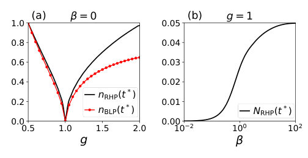
<figcaption class="paper-figure-caption"><b>Fig 1.</b> FIG. 1. We plot the non-Markovianity measures as a function of g and β. Here, we set l = 1, L = 200, and time t∗= 25. In order to compute the maximum in Eq. (37), we considered a stochastic sam- ple of 105 pairs of orthogonal pure states. (a) nRHP(t∗) and nRHP(t∗) vs g ∈[0.5, 2] at β = 0; (b) NRHP(t∗) vs β ∈[10−2, 102] at g = 1 (log-linear scale).</figcaption>
</figure>
<figure class="paper-figure-card">
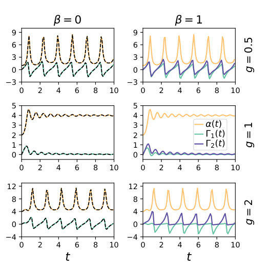
<figcaption class="paper-figure-caption"><b>Fig 2.</b> FIG. 2. Time evolution of α(t), Γ1(t) and Γ2(t) for a single-site sys- tem, g ∈{0.5, 1, 2} (top to bottom) and β ∈{0, 1} (left to right). The coloured continuos lines represent numerical results for L = 100, while black dashed lines show analytical results in the thermody- namic limit (see App. D for details).</figcaption>
</figure>
<figure class="paper-figure-card">
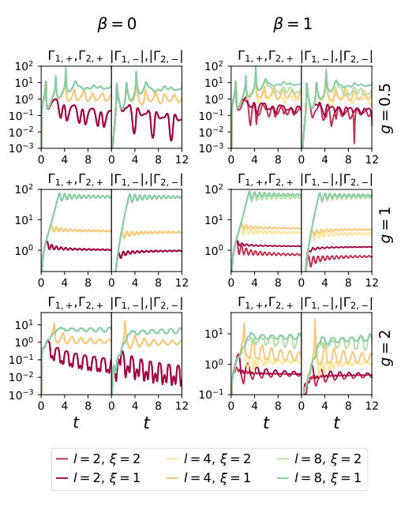
<figcaption class="paper-figure-caption"><b>Fig 3.</b> FIG. 3. Time evolution of the coupling amplitudes {Γξ,σ(t), ξ = 1, 2, σ = ±} for l ∈{2, 4, 8}, L = 200, g ∈{0.5, 1, 2} (top to bot- tom) and β ∈{0, 1} (left to right), shown on a semi-log scale. For all cases considered, we observe a transient regime with exponentially growing rates, and an approach to stationarity for t ≳l/2vmax.</figcaption>
</figure>
<figure class="paper-figure-card">
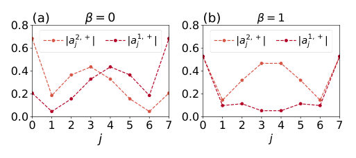
<figcaption class="paper-figure-caption"><b>Fig 4.</b> FIG. 6. Profiles of the creation weights |aξ,+ j | in the Lindblad oper- ators at time t = 12 for l = 8, L = 400, g = 1, β = 0 (left) and β = 1 (right). After the transient, ballistically spreading Lindblad operators have reached half of the subsystem, they hybridize and de- localize over all the l sites. (a) For β = 0, the rates Γξ,σ at ξ = 1, 2 are degenerate and one can choose the corresponding Lindblad oper- ators for ξ = 1, 2 to be symmetric with respect to the middle of the chain. (b) For β &gt; 0, rates Γξ,σ at ξ = 1, 2 are not degenerate and the associated Lindblad operators are distinct.</figcaption>
</figure>
<figure class="paper-figure-card">
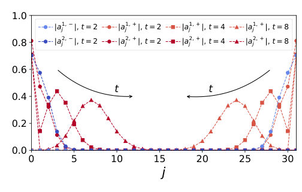
<figcaption class="paper-figure-caption"><b>Fig 5.</b> FIG. 4. Profiles of the creation weights |aξ,σ j | at times t ∈{2, 4, 8} for l = 32, L = 400, g = 1, β = 0. The profiles of the Lindblad operators are symmetric, and spread ballistically from the edges to the bulk over time. The annihilation amplitudes |bξ,σ j | are omitted as they show the same weights.</figcaption>
</figure>
</div>

<p><strong>Summary.</strong> This paper presents a general framework to derive the reduced dynamics generator for local observables in noninteracting quantum chains by tracing out the environment. It successfully handles the complexity of subsystem-environment correlations, showing how coupling strength dictates whether the dynamics are Markovian or non-Markovian. This advances the theory of open quantum systems beyond simple weak-coupling approximations.</p>
<p><strong>Why it may be interesting.</strong> This work provides a rigorous, computationally tractable method to study non-Markovian dynamics in complex quantum systems by systematically handling the environment coupling, which is crucial for understanding realistic open quantum systems.</p>
<details>
<summary>Detailed structure</summary>
<p><strong>Main problem.</strong> The paper develops a framework to derive a reduced description for local observables of a many-body quantum system by tracing out the environment, particularly for noninteracting quantum chains.</p>
<p><strong>Main result.</strong> The framework successfully reconstructs the time-local dynamical generator for noninteracting chains with polynomial complexity, characterizing how subsystem-environment correlations affect local dynamics beyond weak-coupling approximations.</p>
<p><strong>Method.</strong> The approach uses open quantum systems theory, assuming Gaussian environments and initially uncorrelated states to derive the generator $\mathcal{L}_t$ governing the subsystem evolution.</p>
<p><strong>Model / system.</strong> The study focuses on noninteracting quantum chains (e.g., Kitaev chain), treating the total system as partitioned into a subsystem (S) and an environment (E). Dynamics are analyzed via the evolution of the correlation matrix $\Theta_t$.</p>
<p><strong>Key observables.</strong> Reduced density operators ($
ho_S(t)$), correlation matrix ($\Theta_t$), and non-Markovianity measures like the Rivas-Huelga-Plenio (RHP) and Breuer-Laine-Piilo (BLP) measures.</p>
<p><strong>Important parameters / regimes.</strong> Coupling strength, inverse temperature ($eta$), and the structure of the environment (e.g., fully connected free-fermion environment).</p>
<p><strong>Assumptions / limitations.</strong> The derivation relies on assuming initially uncorrelated states ($\chi_0 = 0$) and Gaussian environments ($
ho_{E0}$), which allows for the reconstruction of the generator with polynomial complexity.</p>
<p><strong>Figures summary.</strong> Figures illustrate the time evolution of non-Markovianity measures and the time evolution of correlation matrix components ($\alpha(t), \Gamma_1(t), \Gamma_2(t)$) under varying coupling strengths and temperatures.</p>
<p><strong>Paper structure.</strong> The paper builds the framework by defining the reduced dynamics generator, applying it to specific models like the Kitaev chain, and analyzing the resulting non-Markovian dynamics using established measures.</p>
</details>
<details>
<summary>Abstract</summary>
<p>When only local observables of a many-body quantum system are of interest, it is desirable to formulate a reduced description within the Hilbert space of the corresponding subsystem, with the remaining degrees of freedom traced out and acting as an environment. Assuming initially uncorrelated states and Gaussian environments, we develop a framework for reconstructing the local dynamical generator of noninteracting quantum chains, with polynomial computational complexity. As an application, we consider two representative models: a bipartitioned Kitaev chain and a Kitaev chain boundary-coupled to a fully connected free-fermion environment. In both models, strong subsystem-environment coupling leads to non-Markovian dynamics characterized by ballistic spreading of the Lindblad dissipator support within the subsystem. On the other hand, weak coupling to a fully connected environment yields predominantly boundary-localized, Markovian dissipation. Our work highlights the implications of subsystem-environment correlations on the generator of local dynamics, beyond the conventional weak-coupling approximations.</p>
</details>
<p><sub><a href="#top">↑ back to top</a></sub></p>

<p><a id="paper-2608.20471"></a></p>
<h3 id="collective-quantum-logic-spectroscopy">⭐ <a href="http://arxiv.org/abs/2608.20471v1">Collective Quantum Logic Spectroscopy</a></h3>
<p><strong>Highlighted author(s):</strong> Robert J. Lewis-Swan, Ana Maria Rey<br>
<strong>Authors:</strong> Raphael Kaubruegger, Matthew Patkowski, Yicheng Zhang, Robert J. Lewis-Swan, David B. Hume, Ana Maria Rey<br>
<strong>Type:</strong> theory · <strong>Category:</strong> other · <strong>PDF:</strong> <a href="https://arxiv.org/pdf/2608.20471v1">https://arxiv.org/pdf/2608.20471v1</a><br>
<strong>Analysis basis:</strong> full PDF text, analyzed in chunks
<strong>Topic relevance:</strong> <code>quantum measurements</code> <strong>3/5</strong> · <code>QC/QI experiment</code> <strong>2/5</strong> · <code>analog quantum simulation</code> <strong>1/5</strong></p>
<div class="figure-strip-hint">↔ Scroll figures horizontally</div>
<div class="paper-figures-scroll">
<figure class="paper-figure-card">
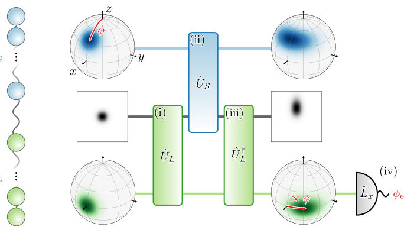
<figcaption class="paper-figure-caption"><b>Fig 1.</b> FIG. 1. Collective QLS protocol NL logic ions are initialized in a coherent spin state pointing along the x axis, while NS spectroscopy ions are initialized in a coherent spin state in which ϕ parametrizes the imbalance between atoms in the ground and excited states, as illustrated by their Wigner distributions on a generalized Bloch sphere. Both ensembles couple to a shared motional mode of the ion crystal, with creation operator ˆa, initially prepared in its ground state. The protocol proceeds by (i) entangling the logic ions with the mode through a spin-dependent displacement ˆUL, (ii) imprinting the spectroscopy population onto the mode through ˆUS, and (iii) reversing the logic–motion...</figcaption>
</figure>
<figure class="paper-figure-card">
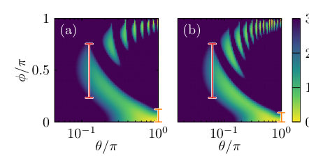
<figcaption class="paper-figure-caption"><b>Fig 2.</b> FIG. 2. Dependence of the sensitivity on the interac- tion parameter. The panels show the sensitivity, quantified by the estimator variance ∆2 ϕ, for estimating the spectroscopy- state parameter ϕ from measurements of the logic ions after the QLS sequence. The sensitivity is shown as a function of the interaction parameter θ and ϕ. Panels (a) and (b) cor- respond to NS = NL = 8 and NS = NL = 16, respectively. Values with ∆2 ϕ ≥2/NS are shown in purple, while smaller variances are color-coded according to the color bar. The red and orange lines indicate θ = π/NS and θ = π, respectively, to- gether with the corresponding dynamic ranges. For θ = π/NS, the dynamic range remains unchanged as the...</figcaption>
</figure>
<figure class="paper-figure-card">
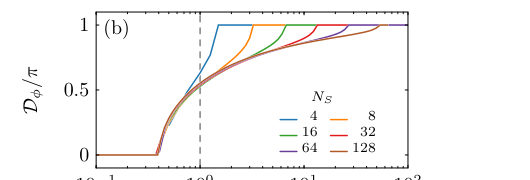
<figcaption class="paper-figure-caption"><b>Fig 3.</b> FIG. 3. Sensitivity and dynamic range in the small- interaction regime. (a) Estimator variance, ∆2 ϕ, plotted as a function of the parameter ϕ for fixed interaction θ = π/NS and NS = 16 spectroscopy ions. Colors indicate the number of logic ions NL. The horizontal dashed and dotted lines indicate ∆2 ϕ = 1/NS and ∆2 ϕ = 2/NS, respectively. (b) Dynamic range Dϕ, defined as the range over which ∆ϕ2 ≤2/NS, as a function of the ratio between logic and spectroscopy ions, NL/NS, for θ = π/NS. Colors indicate different numbers of spectroscopy ions, and the vertical dashed line indicates NL = NS.</figcaption>
</figure>
<figure class="paper-figure-card">
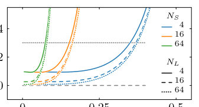
<figcaption class="paper-figure-caption"><b>Fig 4.</b> FIG. 4. Sensitivity and dynamic range in the large- interaction regime. Estimator variance, ∆2 ϕ, as a function of the parameter ϕ at fixed interaction parameter θ = π/2. Colors indicate the spectroscopy-ion number, while line styles indicate the logic-ion number. The horizontal dashed and dotted lines indicate ∆2 ϕ = 1/NS and ∆2 ϕ = 2/NS, respectively.</figcaption>
</figure>
<figure class="paper-figure-card">
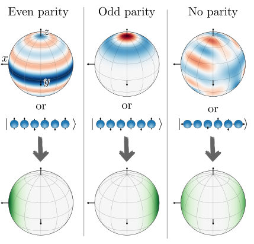
<figcaption class="paper-figure-caption"><b>Fig 5.</b> FIG. 5. Parity mapping through the QLS sequence Even-, odd-, and no-parity states of the spectroscopy ions are mapped through the quantum-logic sequence onto coherent spin states of the logic ions pointing along the +x-axis, the −x-axis, or to a statistical mixture of both, respectively. The relative weight of the two orientations reflects the projection of the initial state onto the corresponding parity subspaces. The top row schematically illustrates entangled, permutation- symmetric states restricted to the even, odd and no-parity subspace, while the middle row shows examples of unentangled product states. Regardless of the specific spectroscopy state, all are mapped onto the logic-ion...</figcaption>
</figure>
</div>

<p><strong>Summary.</strong> This paper introduces Collective Quantum Logic Spectroscopy (QLS) as a powerful, scalable technique for improving precision measurements in trapped-ion quantum sensors. By coupling a large ensemble of sensing ions to a smaller set of logic ions, it overcomes limitations in ion species and scaling. The theoretical analysis quantifies the performance limits, showing how the protocol can maintain quantum-limited sensitivity for applications ranging from optical clocks to quantum computation.</p>
<p><strong>Why it may be interesting.</strong> This work provides a comprehensive theoretical blueprint for enhancing quantum measurements in trapped ions by engineering collective interactions, which is central to quantum metrology and quantum information processing using atomic systems.</p>
<details>
<summary>Detailed structure</summary>
<p><strong>Main problem.</strong> The paper addresses the challenge of scaling trapped-ion quantum sensors to large ensembles while overcoming the limitation that many target ion species lack closed cycling transitions for direct laser cooling and state detection.</p>
<p><strong>Main result.</strong> Collective Quantum Logic Spectroscopy (QLS) is established as a scalable framework that retains quantum-limited sensitivity even with a single logic ion, and whose performance can be tuned for both broad dynamic range and high precision.</p>
<p><strong>Method.</strong> The protocol involves coupling an ensemble of 'spectroscopy' ions to one or more 'logic' ions via a shared motional mode, implementing a sequence of controlled rotations and projective measurements.</p>
<p><strong>Model / system.</strong> The physical system is a trapped-ion quantum sensor comprising an ensemble of spectroscopy ions (NS) coupled to logic ions (NL). The dynamics are modeled using collective spin operators and Hamiltonian terms describing spin-dependent displacements and mode interactions.</p>
<p><strong>Key observables.</strong> Estimator variance ($\Delta^2_\phi$), sensitivity, dynamic range ($D_\phi$), and the collective rotation angle $    heta$.</p>
<p><strong>Important parameters / regimes.</strong> Interaction strength, interrogation time, logic-ensemble size ($N_L$), and spectroscopy-ensemble size ($N_S$).</p>
<p><strong>Assumptions / limitations.</strong> The analysis relies on the Lamb-Dicke approximation, and the theoretical framework is agnostic to the specific implementation of the spin-dependent displacement.</p>
<p><strong>Figures summary.</strong> Figure 1 illustrates the four-step protocol sequence involving logic and spectroscopy ions coupled to a shared motional mode. Figure 2 shows the dependence of the estimator variance on interaction strength ($   heta$) and spectroscopy imbalance ($\phi$).</p>
<p><strong>Paper structure.</strong> The paper first introduces the QLS protocol, detailing the sequence of operations. It then quantifies the parameter estimation performance by analyzing the estimator variance in both small- and large-interaction regimes, concluding with a discussion on scaling laws and robustness against imperfections.</p>
</details>
<details>
<summary>Abstract</summary>
<p>Scaling trapped-ion quantum sensors from single ions to large ensembles is a key challenge for next-generation precision measurements. At the same time, many ion species of interest for optical clocks and tests of fundamental physics lack closed cycling transitions required for direct laser cooling and state detection. Collective quantum logic spectroscopy addresses both limitations by coupling an ensemble of sensor, or spectroscopy, ions to one or more logic ions that provide sympathetic cooling and state readout. Here, we establish the fundamental performance limits and operating regimes of this protocol, identifying how the interaction strength, interrogation time, and logic-ensemble size govern sensitivity, dynamic range, and robustness to experimental imperfections. We show that quantum-limited sensitivity can be retained even with a single logic ion, while increasing the number of logic ions substantially improves readout efficiency and robustness. Beyond precision metrology, the same collective interface enables many-body measurements relevant to quantum information processing, including parity measurements and stabilizer-like syndrome extraction. Our results establish collective quantum logic spectroscopy as a scalable framework for optical clocks, quantum-enhanced sensing, and trapped-ion quantum information processing.</p>
</details>
<p><sub><a href="#top">↑ back to top</a></sub></p>

<p><a id="paper-2608.20578"></a></p>
<h3 id="nonlinear-diamagnetic-interactions-in-ultrastrongly-coupled-2d-electrons"><a href="http://arxiv.org/abs/2608.20578v1">Nonlinear Diamagnetic Interactions in Ultrastrongly Coupled 2D Electrons</a></h3>
<p><strong>Authors:</strong> Dasom Kim, Kiran M. Kulkarni, Vaibhav Sharma, Dukhyung Lee, Geon Lee, Sunghwan Kim, Jonas Grumm, Shuang Liang, Hongjing Xu, Fuyang Tay, Andrey Baydin, Motoaki Bamba, Andreas Knorr, Christopher J. Stanton, Michael J. Manfra, Minah Seo, Stephen Hughes, Junichiro Kono<br>
<strong>Type:</strong> both · <strong>Category:</strong> other · <strong>PDF:</strong> <a href="https://arxiv.org/pdf/2608.20578v1">https://arxiv.org/pdf/2608.20578v1</a><br>
<strong>Analysis basis:</strong> full PDF text, analyzed in chunks
<strong>Topic relevance:</strong> 🔥 <code>quantum optics experiment</code> <strong>4/5</strong> · <code>Tavis-Cummings &amp; cavity-many-emitter</code> <strong>3/5</strong> · <code>analog quantum simulation</code> <strong>3/5</strong> · <code>Keldysh / 2PI / non-Gaussian methods</code> <strong>2/5</strong> · <code>driven-dissipative phase transition</code> <strong>2/5</strong> · <code>methods for driven-dissipative</code> <strong>2/5</strong> · <code>correlated / nonlocal dissipation</code> <strong>1/5</strong> · <code>interference shaping light</code> <strong>1/5</strong> · <code>non-equilibrium universality</code> <strong>1/5</strong> · <code>quantum measurements</code> <strong>1/5</strong></p>
<div class="figure-strip-hint">↔ Scroll figures horizontally</div>
<div class="paper-figures-scroll">
<figure class="paper-figure-card">
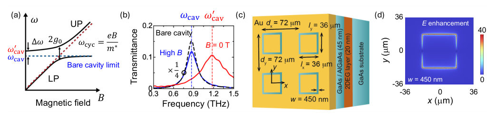
<figcaption class="paper-figure-caption"><b>Fig 1.</b> FIG. 1. Landau polaritons in the USC regime. (a) Upper-polariton (UP) and lower-polariton (LP) frequencies of Landau polaritons as a function of magnetic field. The diamagnetic shift, ∆ω = ω′ cav −ωcav, originates from the diamagnetic (A2) term. (b) Measured transmission spectra of the Landau polariton system at B = 0 and 7 T with the incident electric field strength of 0.01 kV/cm, yielding a diamagnetic shift of ∆ω = 0.32 THz (g0/ωcav = 0.47). The black, dashed trace is the simulated transmission spectrum of the bare cavity, shown for comparison. (c) Schematic illustration of the ultra-subwavelength THz nanoslot cavity array fabricated on a GaAs 2DEG. (d) Simulated electric field...</figcaption>
</figure>
<figure class="paper-figure-card">
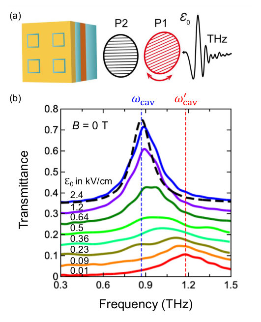
<figcaption class="paper-figure-caption"><b>Fig 2.</b> FIG. 2. Electric-field-induced softening of the diamagnetic response. (a) Schematic of the nonlinear THz transmission experiment. The THz transmissions are measured at B = 0 and T0 = 4 K. (b) Transmission spectra measured at differ- ent incident THz field strengths E0. The resonance continu- ously redshifts from the diamagnetically shifted cavity fre- quency ω′ cav/(2π) = 1.19 THz toward the bare cavity fre- quency ωcav/(2π) = 0.87 THz with increasing electric field strength. Spectra are offset by 0.05, while the bare-cavity spectrum (black dashed line) is scaled to two-thirds of its am- plitude.</figcaption>
</figure>
<figure class="paper-figure-card">
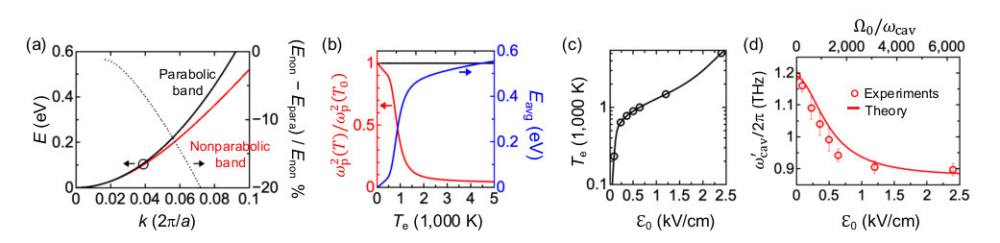
<figcaption class="paper-figure-caption"><b>Fig 3.</b> FIG. 3. Nonparabolicity as a microscopic origin of the reduction of the diamagnetic shift. (a) Calculated GaAs conduction band (red) and its parabolic approximation (black) where a is the lattice constant. The dotted curve (right axis) shows the relative deviation of the nonparabolic band dispersion from the parabolic approximation. (b) Calculated normalized plasma frequency squared (red) and average electron energy Eavg = U/n (blue) as functions of the electron temperature. The black line shows the results for the parabolic band. (c) Calculated correspondence between the incident THz electric field E0 and electron temperature Te. (d) Zero-magnetic-field resonance frequency of the hybrid...</figcaption>
</figure>
</div>

<p><strong>Summary.</strong> This paper reports experimental evidence and theoretical modeling showing that the diamagnetic interaction in ultrastrongly coupled electron-photon systems is nonlinear. The nonlinearity arises from the field-driven redistribution of electrons into the nonparabolic conduction band, necessitating an extension of the standard Hopfield model with Kerr-like terms.</p>
<p><strong>Why it may be interesting.</strong> This work directly addresses the limits of standard linear cavity QED models by incorporating strong-field, non-equilibrium effects (hot-electron dynamics) into the Hamiltonian, which is highly relevant for advanced quantum optics.</p>
<details>
<summary>Detailed structure</summary>
<p><strong>Main problem.</strong> The study investigates the nonlinear diamagnetic response of Landau polaritons in ultrastrongly coupled systems, challenging the assumptions of the conventional linear Hopfield model.</p>
<p><strong>Main result.</strong> The authors experimentally and theoretically demonstrate that intense THz driving fields cause a field-induced reduction in the diamagnetic shift by driving electrons into the nonparabolic regime of the conduction band.</p>
<p><strong>Method.</strong> The work combines nonlinear THz transmission spectroscopy measurements with a microscopic hot-electron model to reproduce the observed field-dependent renormalization of the plasma frequency.</p>
<p><strong>Model / system.</strong> The system involves 2D electrons (GaAs) coupled to a THz cavity, modeled using an extension of the Hopfield Hamiltonian that incorporates a Kerr-like, nonlinear interaction term derived from the nonparabolic band structure.</p>
<p><strong>Key observables.</strong> Diamagnetic shift ($\Delta\omega$), polariton frequencies ($\omega_{\pm}$), and the resonance frequency ($\omega'_{	ext{cav}}$) as a function of incident THz field strength ($E_0$).</p>
<p><strong>Important parameters / regimes.</strong> Ultrastrong coupling regime ($g/\omega_{	ext{cav}} \geq 0.1$), high driving fields ($E_0$ up to 2.4 kV/cm), and the electron temperature ($T_e$).</p>
<p><strong>Assumptions / limitations.</strong> The primary nonlinear effect is attributed to the thermal redistribution of electrons within the nonparabolic conduction band, and the analysis uses the semiclassical Boltzmann equation.</p>
<p><strong>Figures summary.</strong> Figures show the evolution of Landau polariton frequencies with magnetic field and, critically, the redshift of the resonance frequency in THz transmission spectra as the incident THz field strength increases.</p>
<p><strong>Paper structure.</strong> The paper establishes the standard linear model, presents experimental measurements showing nonlinear field dependence, develops a microscopic hot-electron model linking field strength to electron temperature, and finally proposes a nonlinear extension of the quantum Hamiltonian to describe the observed physics.</p>
</details>
<details>
<summary>Abstract</summary>
<p>The quantum Hopfield model is widely used to describe ultrastrong light--matter coupling between cavity photons and collective bosonic excitations in solids, where the diamagnetic interaction is conventionally assumed to be a constant. We experimentally demonstrate that the diamagnetic response of Landau polaritons is reduced under strong terahertz field excitation. We show that this behavior originates from field-driven redistribution of electrons into the nonparabolic regime of the conduction band of GaAs, which reduces the plasma frequency and consequently the diamagnetic interaction strength. A microscopic hot-electron model reproduces the observed nonlinear response. Motivated by this microscopic picture, we propose a nonlinear extension of the Hopfield model with a Kerr-like interaction. Our results establish a route toward nonlinear cavity quantum electrodynamics and driven ultrastrong light--matter coupling beyond the conventional linear Hopfield description, which is capable of creating uniquely quantum optical effects such as squeezed light generation.</p>
</details>
<p><sub><a href="#top">↑ back to top</a></sub></p>

<p><a id="paper-2608.21113"></a></p>
<h3 id="an-autonomous-feedback-protocol-responding-to-temperature-and-potential-changes-in-energy-converters"><a href="http://arxiv.org/abs/2608.21113v1">An autonomous feedback protocol: responding to temperature and potential changes in energy converters</a></h3>
<p><strong>Authors:</strong> Krishna Lyn Delima, Elsa Danielsson, Bruno Bertin-Johannet, Janine Splettstoesser<br>
<strong>Type:</strong> theory · <strong>Category:</strong> statistical mechanics · <strong>PDF:</strong> <a href="https://arxiv.org/pdf/2608.21113v1">https://arxiv.org/pdf/2608.21113v1</a><br>
<strong>Analysis basis:</strong> full PDF text, analyzed in chunks
<strong>Topic relevance:</strong> 🔥 <code>quantum measurements</code> <strong>4/5</strong> · <code>driven-dissipative phase transition</code> <strong>3/5</strong> · <code>methods for driven-dissipative</code> <strong>3/5</strong> · <code>non-equilibrium universality</code> <strong>3/5</strong> · <code>Full counting statistics</code> <strong>2/5</strong> · <code>Keldysh / 2PI / non-Gaussian methods</code> <strong>2/5</strong> · <code>correlated / nonlocal dissipation</code> <strong>1/5</strong></p>
<div class="figure-strip-hint">↔ Scroll figures horizontally</div>
<div class="paper-figures-scroll">
<figure class="paper-figure-card">
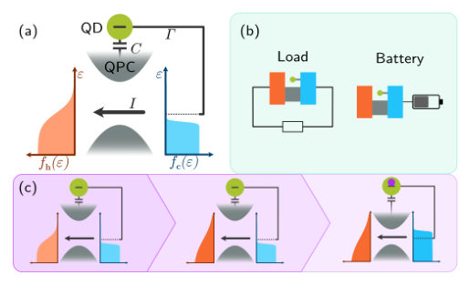
<figcaption class="paper-figure-caption"><b>Fig 1.</b> FIG. 1. Schematic of the autonomous feedback device. (a) A quan- tum point contact (QPC) conducts a (negative) charge current from a cold contact to a hot contact. The cold contact is coupled with strength Γ to a quantum dot (QD), in turn capacitatively coupled to the QPC with capacitance C. (b) The two circuit configuration inves- tigated in the paper. The load setup connects the two contacts through an external resistance. The battery setup lets the cold contact act as a simple battery through charge build-up. (c) Conceptual process of the feedback mechanism. Initially the quantum dot is empty. Then the temperature is raised in the hot contact. The quantum dot is filled either by...</figcaption>
</figure>
<figure class="paper-figure-card">
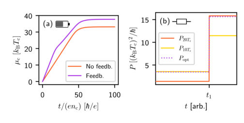
<figcaption class="paper-figure-caption"><b>Fig 2.</b> FIG. 2. (a) Expected build-up of µc in battery setup, obtained from Eq. (7), for maximized µc at τcharge/(enc) = 50 ℏ/e with Th = 20 Tc. The optimized parameters are εfilter = 28.95 kBTc for no feedback (red line) and εe = 17.62 kBTc, εf = 34.49 kBTc, and εQD = 20.45 kBTc with feedback (purple line). (b) Power outputs of the load setup at temperatures Th = 10 Tc for t &lt; t1, and Th = 20 Tc for t &gt; t1, with R = 10 ℏ/e2(≈1.6 h/(e2)). The filter heights are εe = 6.62 kBTc and εf = 13.24 kBTc, which are the optimal heights for Th = 10Tc and Th = 20Tc respectively. The optimized dot level is εQD = 9.27 kBTc.</figcaption>
</figure>
<figure class="paper-figure-card">
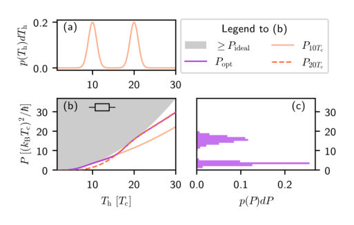
<figcaption class="paper-figure-caption"><b>Fig 3.</b> FIG. 3. (a) Bimodal probability distribution for Th, constructed by normal distributions centered at 10Tc and 20Tc with variance σ2 = Tc. (b) Produced power in the load setup: Pideal is achieved when the barrier height is optimal at each temperature (all values in the gray region are hence excluded); P10Tc and P20Tc are the powers when the barrier height is optimal for Th = 10 Tc and Th = 20 Tc respectively, see Fig. 2; Popt is the power for feedback with filter heights optimized for maximum average power given the bimodal distribution of (a): εe = 6.68 kBTc, εf = 13.10 kBTc, εQD = 8.73 kBTc. (c) Probability distribution of the power values leading to Popt, see Eqs. (11).</figcaption>
</figure>
<figure class="paper-figure-card">
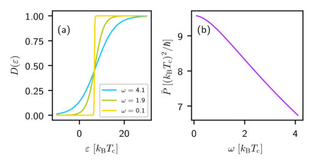
<figcaption class="paper-figure-caption"><b>Fig 4.</b> FIG. 4. (a) Transmission functions for QPCs of various widths, see Eq. (1). (b) Average power depending on width of the QPC trans- mission function. Unsurprisingly, the average power decreases with increasing width.</figcaption>
</figure>
<figure class="paper-figure-card">
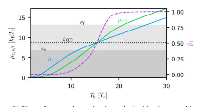
<figcaption class="paper-figure-caption"><b>Fig 5.</b> FIG. 5. Figures detailing potential dynamics for the battery setup (a) and the load setup (b).</figcaption>
</figure>
</div>

<p><strong>Summary.</strong> This work proposes an autonomous feedback control protocol for quantum heat engines using a coupled quantum dot detector. By using the QD to sense external temperature and potential changes, the system dynamically adjusts its energy filter to maximize power output or charging voltage. This demonstrates how feedback can significantly improve energy conversion efficiency under realistic, fluctuating operating conditions.</p>
<p><strong>Why it may be interesting.</strong> The combination of non-equilibrium thermodynamics, stochastic processes (QD dynamics), and optimization techniques for energy harvesting makes it highly relevant for understanding open quantum systems operating under fluctuating external parameters.</p>
<details>
<summary>Detailed structure</summary>
<p><strong>Main problem.</strong> The paper develops and analyzes an autonomous feedback protocol to optimize the performance of quantum-point-contact-based heat engines when external temperature and potential conditions are unknown or variable.</p>
<p><strong>Main result.</strong> Feedback mechanisms significantly enhance energy conversion, allowing the device to optimize power output across varying temperature distributions or increase the charging voltage in open-circuit battery setups.</p>
<p><strong>Method.</strong> The analysis combines coherent steady-state transport theory for the QPC with stochastic rate equations for the coupled quantum dot detector, optimizing parameters based on probability distributions.</p>
<p><strong>Model / system.</strong> The system is a quantum-point-contact (QPC) heat engine coupled to a quantum dot (QD) detector. The QD reads out the electrochemical potential ($\mu_c$) to autonomously adjust the QPC's energy filter, thereby controlling the thermoelectric energy conversion.</p>
<p><strong>Key observables.</strong> Charge current ($I$), average output power ($ar{P}$), final charging potential ($\mu_c$), and the QD occupation probabilities ($p_e, p_f$).</p>
<p><strong>Important parameters / regimes.</strong> Temperature bias ($ ext{Th},    ext{Tc}$), capacitive coupling strength ($U$), and the rates governing QD tunneling ($\Gamma_{ef}, \Gamma_{fe}$).</p>
<p><strong>Assumptions / limitations.</strong> Assumptions include mean-field descriptions for electron interactions, fast electron traversal compared to QD dynamics, and the QD coupling only to the cold contact.</p>
<p><strong>Figures summary.</strong> Figures illustrate the comparison of voltage build-up (battery setup) and power output (load setup) with and without feedback under varying temperature conditions (Normal, Uniform, Bimodal distributions).</p>
<p><strong>Paper structure.</strong> The paper progresses from establishing the basic feedback mechanism in steady-state (load setup) to analyzing charging dynamics (battery setup), then extending the analysis to optimize performance under unknown, time-varying temperature distributions using probability theory.</p>
</details>
<details>
<summary>Abstract</summary>
<p>Nanoscale thermoelectric devices convert tiny amounts of heat into power. But what happens if the external conditions and resulting temperature differences are not a priori known? We propose a feedback mechanism that optimizes the performance of a quantum-point-contact-based heat engine (QPC). A quantum-dot detector measures the external conditions and gives autonomous feedback on the QPC's properties. We expect this feedback mechanism to be experimentally relevant for steady-state engines with unknown external conditions and for adapting dynamic charging processes to the potential buildup.</p>
</details>
<p><sub><a href="#top">↑ back to top</a></sub></p>

<p><a id="paper-2608.20657"></a></p>
<h3 id="symmetry-adapted-hierarchical-equations-of-motion-for-exact-simulations-of-large-polariton-systems"><a href="http://arxiv.org/abs/2608.20657v1">Symmetry Adapted Hierarchical Equations of Motion for Exact Simulations of Large Polariton Systems</a></h3>
<p><strong>Authors:</strong> M. Elious Mondal, Pengfei Huo<br>
<strong>Type:</strong> theory · <strong>Category:</strong> other · <strong>PDF:</strong> <a href="https://arxiv.org/pdf/2608.20657v1">https://arxiv.org/pdf/2608.20657v1</a><br>
<strong>Analysis basis:</strong> full PDF text, analyzed in chunks
<strong>Topic relevance:</strong> 🔥 <code>Tavis-Cummings &amp; cavity-many-emitter</code> <strong>4/5</strong> · 🔥 <code>methods for driven-dissipative</code> <strong>4/5</strong> · <code>analog quantum simulation</code> <strong>3/5</strong> · <code>correlated / nonlocal dissipation</code> <strong>2/5</strong> · <code>driven-dissipative phase transition</code> <strong>2/5</strong> · <code>Keldysh / 2PI / non-Gaussian methods</code> <strong>1/5</strong> · <code>non-equilibrium universality</code> <strong>1/5</strong></p>
<div class="figure-strip-hint">↔ Scroll figures horizontally</div>
<div class="paper-figures-scroll">
<figure class="paper-figure-card">
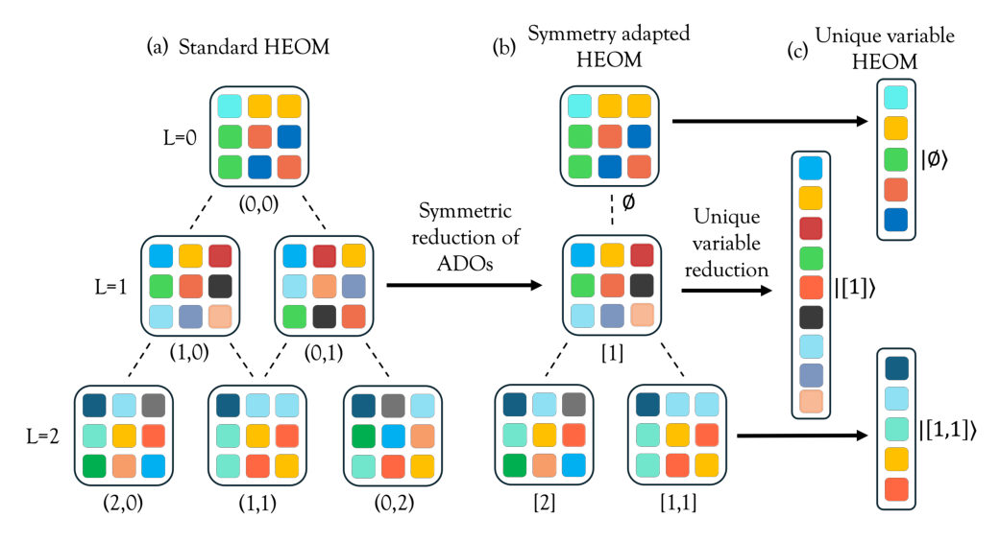
<figcaption class="paper-figure-caption"><b>Fig 1.</b> FIG. 1. A schematic representation of the symmetry adaptation of HEOM for the HTC system. (a) is the ADO structure for the conventional HEOM hierarchy. (b) is the reduction of ADOs within different layers to representatives due to permutation symmetry. (c) is the further reduction of the ADO representatives to their unique variables.</figcaption>
</figure>
<figure class="paper-figure-card">
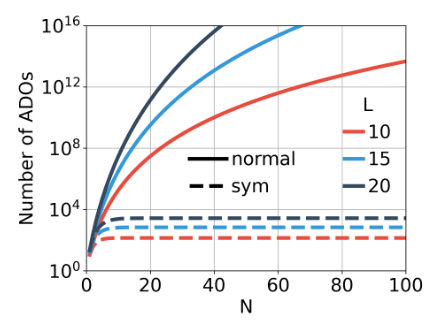
<figcaption class="paper-figure-caption"><b>Fig 2.</b> FIG. 2. Number of ADOs retained through hierarchy depth L for a one-exponential decomposition per local bath. The curves labeled “normal” correspond to the molecule-resolved hierarchy used by conventional HEOM, whereas those labeled “sym” show the canonical ADO representatives obtained af- ter molecular relabeling. The conventional hierarchy grows rapidly with the ensemble size N, while the number of canon- ical representatives saturates once N ≥L.</figcaption>
</figure>
<figure class="paper-figure-card">
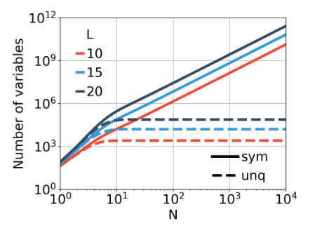
<figcaption class="paper-figure-caption"><b>Fig 3.</b> FIG. 3. Number of propagated complex variables through hierarchy depth L for a one-exponential decomposition per local bath. Curves labeled “sym” correspond to storing every entry of the full (N + 1) × (N + 1) matrix associated with each canonical ADO; curves labeled “unq” show the dimen- sion after retaining only the unique variables. The full-matrix dimension continues to grow with N, whereas the unique- variable dimension saturates for N ≥L + 2.</figcaption>
</figure>
<figure class="paper-figure-card">

<figcaption class="paper-figure-caption"><b>Fig 4.</b> Fig. 3 demonstrates the additional reduction ob- tained by propagating unique variables. Although the canonical-ADO count has already saturated for N ≥L, retaining full ADO matrices preserves an (N +1)2 depen- dence. The unique variable representation instead de- pends only on the occupation categories present in each canonical pattern and on whether a category contains one or at least two molecules. For a fixed pattern, the depen- dence on N enters only through the number of molecules in the zero-occupation category,</figcaption>
</figure>
<figure class="paper-figure-card">
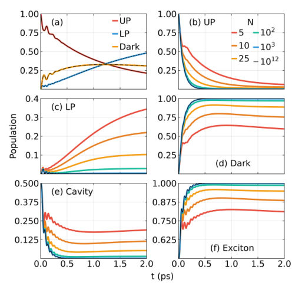
<figcaption class="paper-figure-caption"><b>Fig 5.</b> FIG. 4. Population dynamics for an initial upper-polariton population with a one-exponential decomposition per local bath. (a) Comparison between symmetry-adapted HEOM and the QuTiP implementation of conventional HEOM for N = 2. Colored curves show the symmetry-adapted calcu- lation, and the overlaid black traces show the corresponding conventional HEOM results for the UP, LP, and total dark populations. (b) UP, (c) LP, (d) total dark, (e) cavity, and (f) total exciton populations for N = 5, 10, 25, 102, 103, and 1012, as identified by the legend.</figcaption>
</figure>
</div>

<p><strong>Summary.</strong> The paper introduces a symmetry-adapted Hierarchical Equations of Motion (HEOM) formalism to overcome the prohibitive computational cost of simulating large polariton systems. By exploiting the permutation symmetry of identical molecules, the method drastically reduces the number of variables needed for propagation. This allows for accurate, matrix-free simulation of complex dynamics, including cavity loss and disorder, in large molecular ensembles.</p>
<p><strong>Why it may be interesting.</strong> This work provides a crucial algorithmic advancement for simulating complex open quantum systems in quantum optics and condensed matter, allowing researchers to study collective phenomena in large ensembles previously inaccessible due to exponential scaling.</p>
<details>
<summary>Detailed structure</summary>
<p><strong>Main problem.</strong> The computational cost of using Hierarchical Equations of Motion (HEOM) for simulating large open quantum systems, such as those involving large polariton ensembles.</p>
<p><strong>Main result.</strong> A symmetry-adapted HEOM formalism is developed that significantly reduces computational complexity by exploiting molecular indistinguishability, making simulations feasible for much larger ensembles.</p>
<p><strong>Method.</strong> The method employs a two-stage reduction: first, replacing redundant Auxiliary Density Operators (ADOs) related by molecule relabeling with canonical representatives; second, propagating only unique complex variables instead of full ADO matrices.</p>
<p><strong>Model / system.</strong> The study focuses on large polariton systems modeled by the Holstein-Tavis-Cummings (HTC) model, which involves multiple two-level molecules coupled to a cavity mode and independent harmonic baths. The dynamics are governed by the HEOM formalism.</p>
<p><strong>Key observables.</strong> Polariton populations ($P_+, P_-$), coherence terms ($X_\Lambda, Y_\Lambda$), and the decay of the surviving excitation population ($P_{	ext{surv}}$).</p>
<p><strong>Important parameters / regimes.</strong> Hierarchy depth (L), number of bath correlation exponentials (m), cavity loss rate ($\kappa$), and static disorder strength ($\delta\epsilon_i$).</p>
<p><strong>Assumptions / limitations.</strong> The method assumes identical molecular properties and relies on the existence of a relabeling-compatible hierarchy closure. It also incorporates extensions for static disorder averaging and cavity loss.</p>
<p><strong>Figures summary.</strong> Figure 1 schematically illustrates the two-stage symmetry adaptation process, moving from full ADO structures to canonical representatives and finally to unique variables. Figure S2 simulates polariton dynamics showing population transfer from UP to the ground state.</p>
<p><strong>Paper structure.</strong> The paper first introduces the HEOM framework for open systems, then details the first reduction stage using molecular relabeling covariance to define canonical ADOs. Subsequent sections extend this formalism to incorporate static energetic disorder and cavity loss, deriving the final matrix-free equations of motion.</p>
</details>
<details>
<summary>Abstract</summary>
<p>Hierarchical equations of motion(HEOM) provide exact dynamics of open quantum systems coupled to harmonic baths, but their computational cost becomes prohibitive for systems with many independent local environments. In this work, we develop a symmetry-adapted HEOM formalism to significantly reduce the computational cost for the permutationally invariant Holstein-Tavis-Cummings (HTC) model. The method removes redundant information in two stages. First, all auxiliary density operators (ADOs) related only by relabeling identical molecules and their bath channels are replaced by a single canonical occupation-pattern representative. Second, molecules with the same local hierarchy occupation produce repeated matrix elements within each representative, allowing only the distinct complex variables to be propagated instead of the full (N + 1) $\times$ (N + 1) ADO matrices. The resulting matrix-free equations are evaluated using precomputed connections and molecular multiplicities. At fixed hierarchy depth L and number of bath correlation exponentials m, the number of canonical representatives becomes independent of the ensemble size for N $\geq$ L and the number of unique variables saturates for N $\geq$ L + 2. The formulation easily extends to multiple-exponential bath decompositions, arbitrary initial density operators, static disorders, and cavity loss. Our benchmarks reproduce conventional HEOM dynamics while requiring far fewer propagated variables and substantially less memory.</p>
</details>
<p><sub><a href="#top">↑ back to top</a></sub></p>

<p><a id="paper-2608.20785"></a></p>
<h3 id="an-informational-route-to-negative-mobility"><a href="http://arxiv.org/abs/2608.20785v1">An Informational Route to Negative Mobility</a></h3>
<p><strong>Authors:</strong> Ziluo Zhang, Shigeyuki Komura, Zhihong You<br>
<strong>Type:</strong> theory · <strong>Category:</strong> statistical mechanics · <strong>PDF:</strong> <a href="https://arxiv.org/pdf/2608.20785v1">https://arxiv.org/pdf/2608.20785v1</a><br>
<strong>Analysis basis:</strong> full PDF text, analyzed in chunks
<strong>Topic relevance:</strong> 🔥 <code>quantum measurements</code> <strong>4/5</strong> · <code>driven-dissipative phase transition</code> <strong>3/5</strong> · <code>non-equilibrium universality</code> <strong>3/5</strong> · <code>Keldysh / 2PI / non-Gaussian methods</code> <strong>2/5</strong> · <code>methods for driven-dissipative</code> <strong>2/5</strong> · <code>Frenkel-Kontorova</code> <strong>1/5</strong> · <code>correlated / nonlocal dissipation</code> <strong>1/5</strong></p>
<div class="figure-strip-hint">↔ Scroll figures horizontally</div>
<div class="paper-figures-scroll">
<figure class="paper-figure-card">
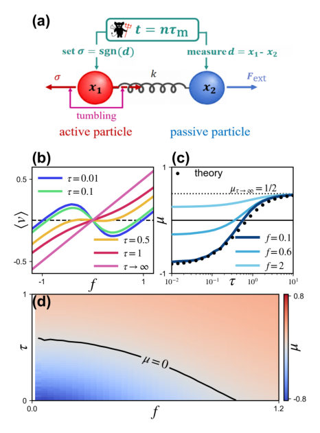
<figcaption class="paper-figure-caption"><b>Fig 1.</b> FIG. 1. Model and transport response of the feedback- controlled active–passive dimer. (a) Schematic of the measurement-and-feedback protocol. (b) Steady-state mean velocity ⟨v⟩as a function of the dimensionless force f for different measurement intervals τ. (c) Effective mobility µ versus τ for various dimensionless force f. Symbols indicate the weak-load analytical prediction from Eq. (3). (d) Mobil- ity diagram in the (f, τ) plane.</figcaption>
</figure>
<figure class="paper-figure-card">
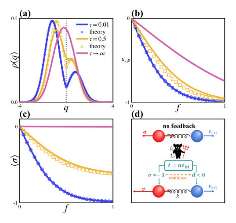
<figcaption class="paper-figure-caption"><b>Fig 2.</b> FIG. 2. Self-reinforcing information–mechanical feedback from configurational bias to active response. (a) Steady-state distribution ρ(q) of the relative coordinate at f = 0.2 for rep- resentative measurement intervals. (b) Internal polarity ζ as a function of f. (c) Mean active polarity ⟨σ⟩as a function of the external force f for different τ. (d) Schematic compari- son between information-free dynamics and the measurement- and-feedback protocol. Solid lines show simulations, while symbols denote the analytical prediction.</figcaption>
</figure>
<figure class="paper-figure-card">
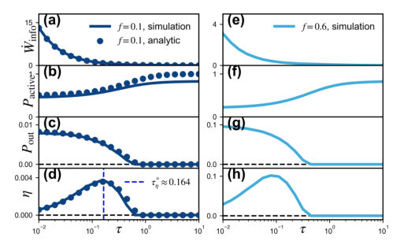
<figcaption class="paper-figure-caption"><b>Fig 3.</b> FIG. 3. Energetic and information-processing performance versus measurement interval. The left column corresponds to the weak load f = 0.1, where solid curves show simula- tions and symbols denote the rapid-feedback analytical pre- diction. The right column shows simulations for the stronger load f = 0.6. (a,e) Minimum information-processing power ˙Winfo. (b,f) Active input power Pactive = ⟨σ ◦˙x1⟩. (c,g) Use- ful mechanical output power Pout = max{0, −f⟨v⟩}. (d,h) Information-inclusive efficiency η = Pout/[Pactive + ˙Winfo]. The blue dashed line indicates the optimal measurement in- terval predicted by the weak-load theory.</figcaption>
</figure>
</div>

<p><strong>Summary.</strong> This paper demonstrates that information feedback can induce negative mobility in a physical dimer system, allowing motion against an applied external force. The authors develop a theory showing that while rapid feedback enhances this reverse transport, it incurs a growing informational cost. Consequently, optimal performance is achieved at a finite, non-zero feedback rate, establishing a fundamental trade-off between control and efficiency.</p>
<p><strong>Why it may be interesting.</strong> The work provides a concrete, non-equilibrium example of how information processing can fundamentally alter macroscopic transport properties, linking thermodynamics, stochastic dynamics, and information theory.</p>
<details>
<summary>Detailed structure</summary>
<p><strong>Main problem.</strong> Investigating how information feedback can provide a distinct route to achieving negative mobility (motion opposite to the applied force) in non-equilibrium systems.</p>
<p><strong>Main result.</strong> Negative mobility is achieved when the information-mediated active response overcomes the direct mechanical response, and the information-inclusive efficiency shows a trade-off, peaking at a finite feedback rate.</p>
<p><strong>Method.</strong> Analytical theory development, utilizing stochastic energetics and analyzing the system's dynamics in the overdamped limit.</p>
<p><strong>Model / system.</strong> An overdamped dimer composed of a run-and-tumble particle coupled to a passive Brownian particle. Information is introduced via periodic measurements of the relative displacement to reset the active polarity.</p>
<p><strong>Key observables.</strong> Mobility ($\mu$), Mean velocity ($\langle v 
angle$), Active polarity ($\langle \sigma 
angle$), Information-inclusive efficiency ($\eta$).</p>
<p><strong>Important parameters / regimes.</strong> Measurement interval ($ au$), Applied force ($f$), Feedback gain ($\chi\lambda$).</p>
<p><strong>Assumptions / limitations.</strong> The system operates in the overdamped limit, and the analysis includes the Landauer bound for information-processing cost.</p>
<p><strong>Figures summary.</strong> Figures illustrate the transition to negative mobility in the $(f, 	au)$ plane, and show the trade-off between information cost, active power, and output power.</p>
<p><strong>Paper structure.</strong> The paper first establishes the basic dynamics and shows the negative mobility regime. It then develops the framework for information-inclusive efficiency, deriving the optimal finite feedback rate that maximizes this efficiency.</p>
</details>
<details>
<summary>Abstract</summary>
<p>Mobility links an applied force to the resulting motion and is generally positive near equilibrium. Far from equilibrium, however, internal energy input can reverse this response. Here we show that information feedback provides a distinct route to negative mobility. We consider an overdamped dimer consisting of a run-and-tumble particle coupled by a spring to a passive Brownian particle. Information enters through periodic measurements of the relative displacement, which are processed to reset the active polarity. Although the unloaded dimer has no net drift, an applied force biases its internal configuration, and an information-mechanical feedback amplifies and converts this bias into active propulsion against the force, producing negative mobility. We develop an analytical theory that captures this mechanism and yields a feedback-gain criterion for response reversal. Including the information-processing cost reveals a tradeoff: rapid feedback enhances reverse transport but incurs a growing informational cost, yielding an optimal finite feedback rate for information-inclusive efficiency. These results show that information can reshape nonequilibrium response by controlling how internally supplied energy is converted into macroscopic transport.</p>
</details>
<p><sub><a href="#top">↑ back to top</a></sub></p>

<p><a id="paper-2608.20787"></a></p>
<h3 id="quantum-phase-estimation-for-nondestructive-monitoring-and-wigner-tomography-of-bosonic-fields"><a href="http://arxiv.org/abs/2608.20787v1">Quantum phase estimation for nondestructive monitoring and Wigner tomography of bosonic fields</a></h3>
<p><strong>Authors:</strong> Lucas R. S. Santos, Ciro M. Diniz, Daniel Z. Rossatto, Celso J. Villas-Boas<br>
<strong>Type:</strong> theory · <strong>Category:</strong> other · <strong>PDF:</strong> <a href="https://arxiv.org/pdf/2608.20787v1">https://arxiv.org/pdf/2608.20787v1</a><br>
<strong>Analysis basis:</strong> full PDF text, analyzed in chunks
<strong>Topic relevance:</strong> 🔥 <code>quantum measurements</code> <strong>4/5</strong> · <code>QC/QI experiment</code> <strong>3/5</strong> · <code>analog quantum simulation</code> <strong>2/5</strong> · <code>quantum optics experiment</code> <strong>2/5</strong> · <code>Full counting statistics</code> <strong>1/5</strong> · <code>Tavis-Cummings &amp; cavity-many-emitter</code> <strong>1/5</strong> · <code>driven-dissipative phase transition</code> <strong>1/5</strong> · <code>methods for driven-dissipative</code> <strong>1/5</strong></p>
<div class="figure-strip-hint">↔ Scroll figures horizontally</div>
<div class="paper-figures-scroll">
<figure class="paper-figure-card">
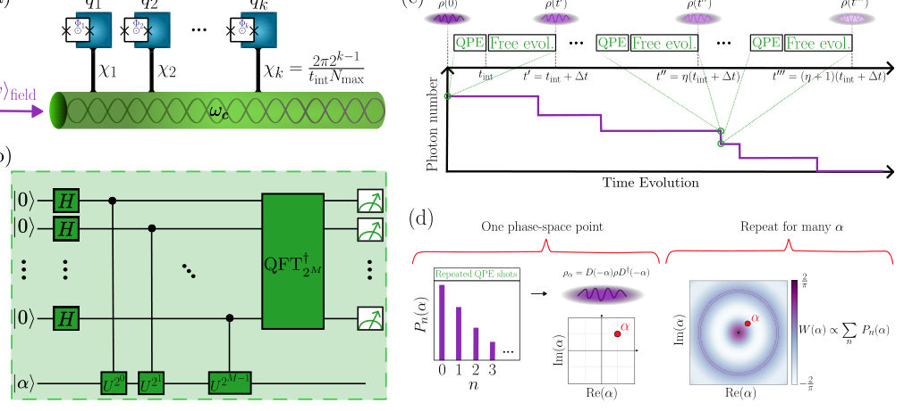
<figcaption class="paper-figure-caption"><b>Fig 1.</b> FIG. 1. Circuit-QED protocol for QND monitoring and Wigner tomography of a bosonic field using quantum phase estimation (QPE). (a) Physical platform: a bosonic resonator mode at frequency ωc is dispersively coupled to a register of M frequency-tunable superconducting qubits. The flux-dependent detunings ∆k(Φk) control the dispersive shifts χk(Φk) ≃|gk|2/∆k(Φk), which are calibrated to implement the QPE controlled phases. (b) QPE readout: the register is prepared in a uniform superposition, acquires photon-number-dependent phases through the dispersive interaction, and is measured after the inverse quantum Fourier transform, yielding an outcome correlated with the resonator photon number....</figcaption>
</figure>
<figure class="paper-figure-card">
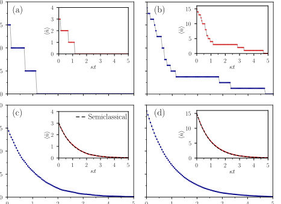
<figcaption class="paper-figure-caption"><b>Fig 2.</b> FIG. 2. QND monitoring of the dissipative field dynamics us- ing QPE. The main panels show the average phase θavg(t) = P</figcaption>
</figure>
<figure class="paper-figure-card">
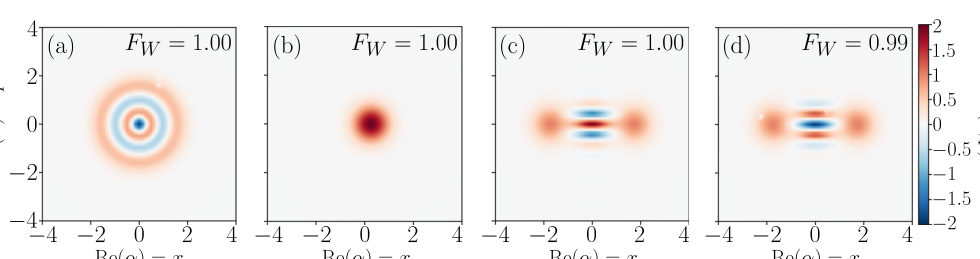
<figcaption class="paper-figure-caption"><b>Fig 3.</b> FIG. 3. Wigner function reconstruction in the phase-space diagram from the displaced photon-number distributions obtained by repeating the QPE readout. We use an M = 6 qubits, corresponding to Nmax = 2M = 64, and consider N = 3 in all panels: (a) a Fock state |N⟩, (b) a coherent state |α0⟩with α0 = √</figcaption>
</figure>
</div>

<p><strong>Summary.</strong> The paper shows how Quantum Phase Estimation (QPE) can be adapted in a circuit-QED setup to nondestructively measure bosonic field properties. By leveraging dispersive coupling, the photon number is mapped onto qubit phases, allowing for both tracking photon loss and reconstructing the full Wigner function. This offers a powerful, unified tool for characterizing quantum light states in superconducting circuits.</p>
<p><strong>Why it may be interesting.</strong> This work directly addresses state characterization and control in superconducting quantum architectures by providing a robust, quantum-limited measurement protocol for bosonic modes.</p>
<details>
<summary>Detailed structure</summary>
<p><strong>Main problem.</strong> To demonstrate that Quantum Phase Estimation (QPE), typically used for eigenphase extraction, can be repurposed as a nondestructive measurement tool for characterizing bosonic fields.</p>
<p><strong>Main result.</strong> The protocol provides a unified method to perform both nondestructive monitoring of photon-number dynamics and full Wigner tomography of bosonic states using a circuit-QED platform.</p>
<p><strong>Method.</strong> The technique involves coupling a bosonic mode to a superconducting qubit register, using the dispersive interaction to imprint photon-number-dependent phases, and then reading out these phases via QPE and controlled phase-space displacements.</p>
<p><strong>Model / system.</strong> The system is a bosonic resonator mode dispersively coupled to an M-qubit superconducting register, governed by a multi-qubit Jaynes-Cummings Hamiltonian. The dynamics are analyzed in the dispersive regime, where the interaction is proportional to the photon number $\hat{n}$.</p>
<p><strong>Key observables.</strong> Photon number distribution, Wigner function, Wigner-overlap fidelity ($F_W$), and mean photon number decay $\langle\hat{n}(t)
angle$.</p>
<p><strong>Important parameters / regimes.</strong> Dispersive coupling strengths ($\chi_k$), cavity decay rate ($\kappa$), and the maximum number of qubits ($M$).</p>
<p><strong>Assumptions / limitations.</strong> The dispersive regime is assumed, and the protocol relies on calibrating the dispersive phase shifts to match the required QPE unitary evolution.</p>
<p><strong>Figures summary.</strong> The notes do not describe specific figures, but the analysis focuses on numerical reconstructions of Wigner functions for various states (Fock, coherent, cat states) showing high fidelity.</p>
<p><strong>Paper structure.</strong> The paper progresses by first establishing the physical model (Hamiltonian), then adapting QPE for number-resolved readout, applying this to monitor dissipative photon loss, and finally extending the readout via phase-space displacements for Wigner tomography.</p>
</details>
<details>
<summary>Abstract</summary>
<p>Quantum phase estimation is usually introduced as an algorithmic primitive for extracting eigenphases of unitary operators. Here we show that, when implemented through a dispersive light-matter interaction, it can also be used as a nondestructive measurement tool for bosonic fields. We consider a bosonic mode coupled to a multi-qubit register and calibrate the photon-number dependent phase shifts so that the register performs a number-resolved quantum phase estimation readout. Repeating this readout during dissipative evolution enables nondestructive monitoring of photon-number dynamics. We then show that the same readout can be converted into a Wigner tomography reconstruction by applying phase-space displacements before the quantum phase estimation block. Numerical reconstructions for Fock, coherent, and even/odd Schrödinger cat states show the expected nonclassical phase-space structures and near-unity Wigner overlap fidelities. The protocol provides a unified route to nondestructive monitoring and state tomography of bosonic fields, with direct relevance for bosonic-state characterization, calibration, and control in superconducting quantum architectures.</p>
</details>
<p><sub><a href="#top">↑ back to top</a></sub></p>

<p><a id="paper-2608.21329"></a></p>
<h3 id="quantum-annealing-through-a-first-order-phase-transition-field-theory-approach"><a href="http://arxiv.org/abs/2608.21329v1">Quantum annealing through a first-order phase transition: field theory approach</a></h3>
<p><strong>Authors:</strong> Diego Andrés Rivera Orona, Predrag Punoševac, Nikolai A. Sinitsyn<br>
<strong>Type:</strong> theory · <strong>Category:</strong> statistical mechanics · <strong>PDF:</strong> <a href="https://arxiv.org/pdf/2608.21329v1">https://arxiv.org/pdf/2608.21329v1</a><br>
<strong>Analysis basis:</strong> full PDF text, analyzed in chunks
<strong>Topic relevance:</strong> 🔥 <code>non-equilibrium universality</code> <strong>4/5</strong> · <code>Keldysh / 2PI / non-Gaussian methods</code> <strong>3/5</strong> · <code>driven-dissipative phase transition</code> <strong>3/5</strong> · <code>analog quantum simulation</code> <strong>2/5</strong> · <code>methods for driven-dissipative</code> <strong>2/5</strong></p>
<div class="figure-strip-hint">↔ Scroll figures horizontally</div>
<div class="paper-figures-scroll">
<figure class="paper-figure-card">
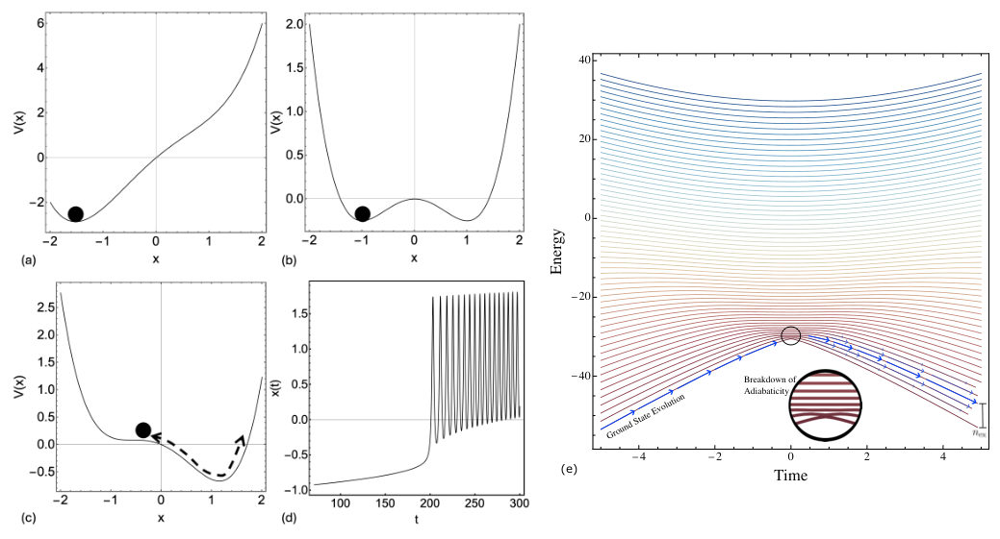
<figcaption class="paper-figure-caption"><b>Fig 1.</b> FIG. 1. Stages of the first-order phase transition. (a-c) Potential energy V (x) (solid curve) of the Hamiltonian, as in Eq.(24), at different times: (a) For t &lt; 0, the system continuously follows a global minimum (black circle). (b) At t = 0, the initial minimum of V (x, t) is no longer global, but the potential barrier prevents the transition to a new global minimum. (c) At the critical moment, t = tc, the initial local minimum of V (x, t) disappears, and the system then falls down the potential V (x, t), starting to oscillate around the global minimum. (d) A numerically computed trajectory of x(t). The emergence of high-amplitude oscillations corresponds to the transition to stage (c)....</figcaption>
</figure>
<figure class="paper-figure-card">
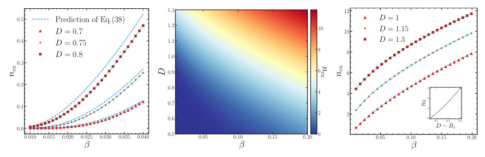
<figcaption class="paper-figure-caption"><b>Fig 2.</b> FIG. 2. Left Panel: The number of excitations as a function of the sweep rate for three different Ising spin couplings D below the critical point. Each set of data also includes a solid, two-parameter fit line, nex = cβ exp(−∆/β). The dashed lines are the analytical predictions from Eq. (38) without free-parameter fitting. Center Panel: Density plot showing the number of excitations as a function of the sweep rate β and the Ising spin coupling D. Right Panel: The number of excitations as a function of the sweep rate for three different Ising spin couplings. Each set of data also includes a three-parameter best-fit line, nex = n0 + cβν. The inset shows the fit values n0 as a function of D...</figcaption>
</figure>
<figure class="paper-figure-card">
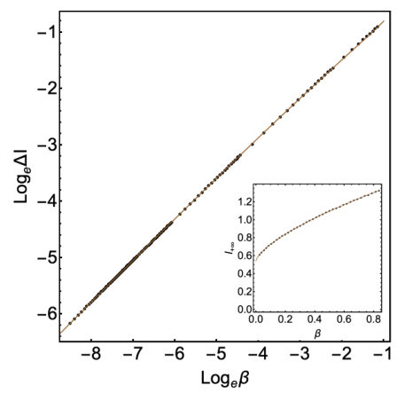
<figcaption class="paper-figure-caption"><b>Fig 3.</b> FIG. 3. Best fit of ∆I, defined in Eq. (27), in the log-log plot. The black points are the results of numerical simulations over a broad range of values of β. The brown curve is the best fit given by ln(∆I) = 0.8 ln β + a(ln ln β)r, with a = 0.2 and r = 1.5, suggesting that ν+ = 0.8. The constant parameters were chosen so that k = m = g = 1. The inset shows I+∞versus β ∈(0.02, 0.9). A projection of the best fit to β →0 shows that I+∞saturates at a finite value. Numerically obtained field theory curves for I+∞are analogous to those in Fig. 2 (Right) for nex in LMGm.</figcaption>
</figure>
</div>

<p><strong>Summary.</strong> This work develops a field theory to characterize defects generated during quantum annealing, specifically when the process encounters a first-order phase transition. By analyzing the scaling of excitations using the LMGm model, the authors predict distinct power-law behaviors that can serve as a diagnostic tool to identify and potentially avoid problematic first-order critical points in quantum computation protocols.</p>
<p><strong>Why it may be interesting.</strong> The connection between the universal scaling laws derived from quantum field theory and the non-equilibrium dynamics of quantum computation is highly relevant for understanding noise and error mitigation in quantum hardware.</p>
<details>
<summary>Detailed structure</summary>
<p><strong>Main problem.</strong> The paper investigates the generation of excitations (defects) during quantum annealing when the process traverses a first-order phase transition, contrasting this with second-order transitions.</p>
<p><strong>Main result.</strong> It derives distinct power-law scaling predictions for the error generation rate depending on whether the transition is subcritical, at the critical point, or supercritical, providing a signature for first-order critical points.</p>
<p><strong>Method.</strong> The authors employ a field theory approach, mapping the quantum dynamics to a time-dependent $\phi^4$ theory, and utilize semiclassical approximations and adiabatic invariant analysis.</p>
<p><strong>Model / system.</strong> The primary model is the driven Lipkin-Meshkov-Glick model (LMGm) of interacting Ising spins. The dynamics are analyzed by mapping the quantum problem to a classical Hamiltonian $H_{	ext{cl}}(x, p, t)$ in the large $S$ limit.</p>
<p><strong>Key observables.</strong> Number of excitations ($n_{ex}$), the adiabatic invariant ($\Delta I$), and the scaling exponents ($
u, \mu$).</p>
<p><strong>Important parameters / regimes.</strong> The coupling parameter $k$ (determining the transition order), the sweep rate ($eta$), and the initial/final adiabatic invariants ($I_0$).</p>
<p><strong>Assumptions / limitations.</strong> The analysis relies on mapping the system to a 0+1 dimensional field theory and making approximations in the adiabatic limit and when calculating the change in the adiabatic invariant.</p>
<p><strong>Figures summary.</strong> Figure 1 illustrates the stages of a first-order phase transition potential $V(x, t)$. Figure 2 shows numerical results for $n_{ex}$ vs. sweep rate ($eta$) for the LMGm. Figure 3 plots the scaling of $\Delta I$ vs. $eta$ on a log-log scale.</p>
<p><strong>Paper structure.</strong> The paper first establishes the field theory framework for defect generation. It then analyzes the scaling laws for the three regimes ($k<0, k=0, k>0$) using theoretical derivations. Finally, it compares these theoretical predictions with numerical simulations of the LMGm.</p>
</details>
<details>
<summary>Abstract</summary>
<p>Unlike second-order phase transitions, a first-order transition has a stage, in which a system is trapped in a metastable state. The decay of this state leads to abundant excitations over the ground state. We present a field theory for kinetics of defects emerging during quantum annealing computations. This theory predicts several power laws for the error generation rate during quantum annealing either though or near the first-order phase transition. Sharp changes between the power exponents are predicted for continuous parameter changes. Observation of this behavior would be a signature of first-order critical points and could help identify and avoid them for better computations. The driven Lipkin-Meshkov-Glick model (LMGm) serves as the minimal model of interacting Ising spins that demonstrates this behavior.</p>
</details>
<p><sub><a href="#top">↑ back to top</a></sub></p>

<p><a id="paper-2608.20487"></a></p>
<h3 id="energetics-in-daemonic-work-extraction-protocols-via-non-ideal-qnd-energy-measurement"><a href="http://arxiv.org/abs/2608.20487v1">Energetics in daemonic work extraction protocols via non-ideal QND-energy measurement</a></h3>
<p><strong>Authors:</strong> Daniele Morrone, Francesco Albarelli, Vittorio Giovannetti, Mauro Paternostro, Marco G. Genoni<br>
<strong>Type:</strong> theory · <strong>Category:</strong> statistical mechanics · <strong>PDF:</strong> <a href="https://arxiv.org/pdf/2608.20487v1">https://arxiv.org/pdf/2608.20487v1</a><br>
<strong>Analysis basis:</strong> full PDF text, analyzed in chunks
<strong>Topic relevance:</strong> 🔥 <code>quantum measurements</code> <strong>4/5</strong> · <code>Keldysh / 2PI / non-Gaussian methods</code> <strong>2/5</strong> · <code>methods for driven-dissipative</code> <strong>2/5</strong> · <code>Full counting statistics</code> <strong>1/5</strong> · <code>correlated / nonlocal dissipation</code> <strong>1/5</strong> · <code>driven-dissipative phase transition</code> <strong>1/5</strong> · <code>non-equilibrium universality</code> <strong>1/5</strong></p>
<div class="figure-strip-hint">↔ Scroll figures horizontally</div>
<div class="paper-figures-scroll">
<figure class="paper-figure-card">
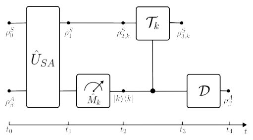
<figcaption class="paper-figure-caption"><b>Fig 1.</b> FIG. 1. A schematics for the QND energy measurement pro- tocol we investigate. The main system S is made to interact with an auxiliary system to create correlation between them. The auxiliary system A is then projected through a set of PVM operators, allowing indirect measurement of the sys- tem S, where the amount of information gained is inversely proportional to the temperature of the initial state of A: for the system’s state initially in the zero temperature thermal state (ground state), the maximum amount of information is obtained, while for the infinite temperature state no informa- tion at all is obtained. Based on the measurement outcome, an extraction operation is performed on S,...</figcaption>
</figure>
<figure class="paper-figure-card">
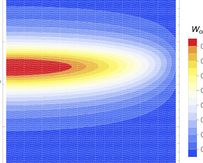
<figcaption class="paper-figure-caption"><b>Fig 2.</b> FIG. 2. Measurement cost Wcost for the non-ideal QND mea- surement on a qubit initial state ρS 0 as a function of the ab- solute value of its Bloch component |vz| and of the inverse temperature β caractherizing the thermal state of the auxil- iary quantum system.</figcaption>
</figure>
<figure class="paper-figure-card">
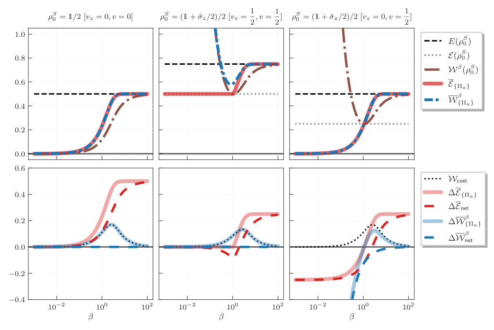
<figcaption class="paper-figure-caption"><b>Fig 3.</b> FIG. 3. We plot the different figures of merit we have presented for the qubit QND work extraction protocol, considering three different possible initial states: left panels - maximally mixed state: ρS 0 = 1/2; middle panels - active initial state diagonal in the energy eigenbasis ρS 0 = (1 + ˆσz/2)/2; right panels - active initial state with coherences in the energy eigenbasis: ρS 0 = (1 + ˆσx/2)/2. In the top panels we focus on the absolute values of the work extractable via the QND-daemonic protocol, while in the bottom panel we focus on the enhancement obtainable via these protocols, with and without considering the measurement cost in the energy balance.</figcaption>
</figure>
</div>

<p><strong>Summary.</strong> This paper analyzes the thermodynamics of work extraction assisted by quantum non-demolition measurements in the presence of thermal noise. It establishes that while perfect measurement allows full energy extraction, finite temperature introduces an energetic cost, leading to a non-positive net gain when thermal baths are utilized. The key finding is that a positive work advantage can only be achieved if the process is restricted to unitary evolution, highlighting the thermodynamic cost of measurement itself.</p>
<p><strong>Why it may be interesting.</strong> This work provides a rigorous thermodynamic resource theory framework for quantum measurement, quantifying the fundamental energy costs associated with extracting work from quantum correlations, which is highly relevant to quantum thermodynamics and open quantum systems.</p>
<details>
<summary>Detailed structure</summary>
<p><strong>Main problem.</strong> The paper investigates the energetic cost and feasibility of extracting work from a quantum system using a Quantum Non-Demolition (QND) energy measurement, especially when the measurement process is non-ideal due to a finite-temperature auxiliary bath.</p>
<p><strong>Main result.</strong> When a thermal bath is accessible during extraction, the daemonic net gain is proven to be non-positive, indicating no thermodynamic advantage. Conversely, restricting the process to unitary operations can yield a positive net gain.</p>
<p><strong>Method.</strong> The analysis uses theoretical tools like ergotropy, non-equilibrium free energy ($F_eta$), and the concept of 'daemonic net gain' to quantify work extraction under different thermodynamic constraints.</p>
<p><strong>Model / system.</strong> The model involves a quantum system ($S$) coupled to an auxiliary system ($A$) for QND measurement, operating within the context of a thermal bath ($B$) at temperature $T=1/eta$. The analysis compares ideal (zero-temperature) versus non-ideal (finite-temperature) measurement protocols.</p>
<p><strong>Key observables.</strong> Daemonic net gain ($\Delta E_{	ext{net}}$), Ergotropy, Non-equilibrium Free Energy ($F_eta$), and the energetic cost associated with measurement and resetting.</p>
<p><strong>Important parameters / regimes.</strong> Bath temperature ($eta$), initial state coherence, and the comparison between unitary vs. bath-assisted operations.</p>
<p><strong>Assumptions / limitations.</strong> The analysis assumes the applicability of the free-energy bound for isothermal work and compares protocols under the assumption of a single bath temperature controlling noise and cost.</p>
<p><strong>Figures summary.</strong> Figures schematically illustrate the QND measurement protocol and show the temperature dependence of the net-daemonic-ergotropy gain ($\Delta E_{	ext{net}}$) relative to the bath temperature $eta$.</p>
<p><strong>Paper structure.</strong> The paper establishes the ideal case (zero-T bath), then analyzes the non-ideal case with finite temperature, deriving the net-daemonic-ergotropy gain. It rigorously proves the non-positivity of this gain when the bath is accessible, contrasting this with positive gains achievable under purely unitary constraints.</p>
</details>
<details>
<summary>Abstract</summary>
<p>We address the problem of extracting work from a quantum system assisted by a quantum non-demolition (QND) energy measurement. When a perfect QND measurement can be performed and an auxiliary zero-temperature bath is available, the full energy of the quantum state can in principle be extracted even without any prior information on the input state. Owing to the presence of a zero-temperature bath, this is achieved at no energetic cost for the measurement process itself. On the contrary, here we consider what happens when the same protocol is implemented in non-ideal scenarios, specifically when the auxiliary bath has a finite temperature. In this case, not only is it impossible to extract the entire energy from the system, but the measurement strategy also acquires a non-zero energetic cost, accounting for both the interaction between system and measurement apparatus, and the corresponding Landauer erasure cost. We quantitatively assess the performance of these work-extraction protocols, both in absolute terms and through the so-called daemonic net gain, which explicitly includes the energetic cost of the measurement. We rigorously prove that, when access to a thermal bath is allowed in the extraction protocol, the daemonic net gain is always non-positive for any temperature of the auxiliary bath. Conversely, when only unitary operations are considered, the daemonic net gain can attain positive values. We further discuss these different figures of merit by analyzing a paradigmatic example for a single qubit system.</p>
</details>
<p><sub><a href="#top">↑ back to top</a></sub></p>

<p><a id="paper-2608.20555"></a></p>
<h3 id="exact-scaling-theory-of-social-tipping-phenomena-in-finite-populations"><a href="http://arxiv.org/abs/2608.20555v1">Exact Scaling Theory of Social Tipping Phenomena in Finite Populations</a></h3>
<p><strong>Authors:</strong> Bianca Y. S. Ishikawa, José F. Fontanari<br>
<strong>Type:</strong> theory · <strong>Category:</strong> statistical mechanics · <strong>PDF:</strong> <a href="https://arxiv.org/pdf/2608.20555v1">https://arxiv.org/pdf/2608.20555v1</a><br>
<strong>Analysis basis:</strong> full PDF text, analyzed in chunks
<strong>Topic relevance:</strong> 🔥 <code>non-equilibrium universality</code> <strong>4/5</strong> · <code>driven-dissipative phase transition</code> <strong>3/5</strong> · <code>analog quantum simulation</code> <strong>2/5</strong> · <code>Keldysh / 2PI / non-Gaussian methods</code> <strong>1/5</strong> · <code>methods for driven-dissipative</code> <strong>1/5</strong></p>
<div class="figure-strip-hint">↔ Scroll figures horizontally</div>
<div class="paper-figures-scroll">
<figure class="paper-figure-card">
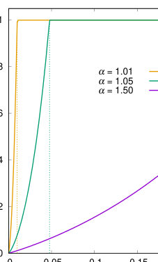
<figcaption class="paper-figure-caption"><b>Fig 1.</b> Figure 1: Steady-state active fraction ρ∞as a function of the initial seed fraction ρ0 for the power-law threshold distribution (β = 1) across three susceptibility parameters: α = 1.01, α = 1.05, and α = 1.50. Vertical dashed lines indicate the critical seed thresholds ρc 0 = 1−1/α, above which full global cascade (ρ∞= 1) is achieved: ρc 0 ≈0.010 for α = 1.01, ρc 0 ≈0.048 for α = 1.05, and ρc 0 ≈0.333 for α = 1.50. The plots illustrate how the transition becomes increasingly steep as α →1+, displaying a sharp crossover toward the discontinuous step- function characteristic of the unseeded limit.</figcaption>
</figure>
<figure class="paper-figure-card">
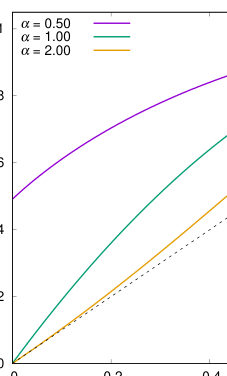
<figcaption class="paper-figure-caption"><b>Fig 2.</b> Figure 2: Steady-state active fraction ρ∞as a function of the initial seed fraction ρ0 in the conservative scenario (β = 0.5) for α = 0.5, α = 1.0, and α = 2.0. The dashed line represents the identity ρ∞= ρ0. For all ρ0 &gt; 0, the curves represent smooth partial cascades.</figcaption>
</figure>
<figure class="paper-figure-card">
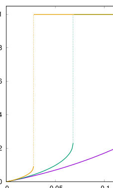
<figcaption class="paper-figure-caption"><b>Fig 3.</b> Figure 3: Steady-state active fraction ρ∞as a function of the initial seed fraction ρ0 in the susceptible regime (β &gt; 1) for a fixed susceptibility parameter α = 1.5. Curves depict three threshold distributions: β = 1.1, β = 1.5, and β = 2.0. Vertical dashed lines indicate the discontinuous phase transitions at the critical seeding thresholds ρc 0. When the seed exceeds this threshold, the low-activation branch ρ−annihilates with the unstable barrier ρu, forcing an abrupt jump to the complete cascade state ρ∞= 1. As β decreases, ρc 0 shifts to larger seeds, reflecting greater collective resistance.</figcaption>
</figure>
<figure class="paper-figure-card">
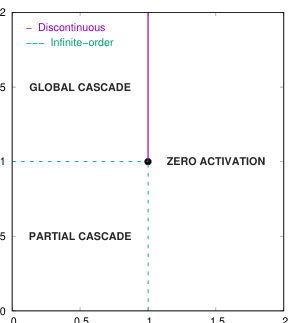
<figcaption class="paper-figure-caption"><b>Fig 4.</b> Figure 4: Phase diagrams of the deterministic system in the (α, β) parameter plane for different initial seed values. Left panel: The unseeded case (ρ0 = 0), displaying three distinct phases intersecting at the critical junction (1, 1). The solid vertical line at α = 1 (β &gt; 1) denotes a discontinuous transition directly from global cascade to zero activation. The dashed lines represent continuous, infinite-order transitions driven by essential singularities: the horizontal boundary at β = 1 (α &lt; 1) separates the partial and global cascades, while the vertical boundary at α = 1 (β &lt; 1) separates the partial cascade from zero activation. Right panel: The seeded case (ρ0 = 0.1). The pure...</figcaption>
</figure>
<figure class="paper-figure-card">
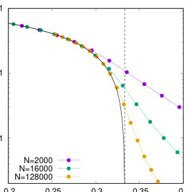
<figcaption class="paper-figure-caption"><b>Fig 5.</b> Figure 5: Finite-size scaling of the continuous cascade transition for a power-law threshold distribution F(x) = xα with shape parameter α = 1.5. Left panel: Expected final inactive fraction 1−⟨ρ∞(N)⟩as a function of the initial seed density ρ0 across system sizes N = 2000, 16000, and 128000. The vertical dashed line denotes the critical seed threshold ρc 0 = 1−1/α = 1/3, while the solid black curve represents the exact deterministic solution. Right panel: Log- log plot of 1 −⟨ρ∞(N)⟩versus inverse system size 1/N at criticality (ρ0 = 1/3). The Monte Carlo data match the theoretical finite-size power-law scaling 1 −⟨ρ∞(N)⟩= aN−1/3 (black line) with fitted prefactor a = 1.52. Statistical...</figcaption>
</figure>
</div>

<p><strong>Summary.</strong> This paper provides an exact, rigorous theory for analyzing social tipping points in finite populations using a threshold model. It maps out the phase diagram, identifying hybrid phase transitions, and crucially derives the finite-size scaling laws that govern how these sharp transitions are smoothed out by finite-size fluctuations. This work offers a powerful, analytically tractable benchmark for understanding non-equilibrium critical phenomena.</p>
<p><strong>Why it may be interesting.</strong> While focused on social dynamics, the mathematical framework—analyzing phase transitions, critical exponents, and finite-size scaling near bifurcation points—is highly relevant to non-equilibrium statistical physics models in quantum systems.</p>
<details>
<summary>Detailed structure</summary>
<p><strong>Main problem.</strong> The paper characterizes social tipping points—the minimum initial seed required for global mobilization—in finite populations using a threshold model.</p>
<p><strong>Main result.</strong> It establishes an exact finite-size scaling theory for these tipping phenomena, revealing how finite-size fluctuations smooth out sharp phase transitions into continuous scaling laws.</p>
<p><strong>Method.</strong> The study employs exact analytical techniques, combining finite-N combinatorial formulations with large-deviation theory to analyze the cascade dynamics.</p>
<p><strong>Model / system.</strong> The model is based on Granovetter's threshold model, where social mobilization spreads in a finite population N. Susceptible agents have activation thresholds drawn from a Beta distribution, and the dynamics are governed by a self-consistency equation for the active fraction.</p>
<p><strong>Key observables.</strong> Asymptotic active fraction (rho_infinity), critical seeding threshold (rho_c^0), and the order parameter gap (rho* - <rho_infinity>).</p>
<p><strong>Important parameters / regimes.</strong> Beta distribution parameters (alpha, beta), initial seed fraction (rho_0), and population size (N).</p>
<p><strong>Assumptions / limitations.</strong> The analysis assumes synchronous and deterministic updating in the thermodynamic limit, and later incorporates finite-size corrections via large-deviation theory.</p>
<p><strong>Figures summary.</strong> Figures illustrate the phase diagram showing the transition boundaries in the (alpha, beta) plane, and specific plots confirm the predicted scaling laws for the order parameter gap as a function of N.</p>
<p><strong>Paper structure.</strong> The paper progresses from defining the deterministic limit and phase diagram (identifying hybrid transitions) to deriving the scaling laws by incorporating finite-size fluctuations, culminating in the establishment of the full finite-size scaling theory.</p>
</details>
<details>
<summary>Abstract</summary>
<p>Granovetter's threshold model provides a classical framework for social mobilization, where collective action spreads through cascades as individuals join once movement size reaches their personal threshold. Here, we characterize social tipping points-the minimum seed required for global mobilization-using the initial fraction of instigators, $ρ_0$, as a control parameter. For a finite population of size $N$ with Beta-distributed thresholds $(α, β)$, we present an exact analytical study of the cascade dynamics. By evaluating the asymptotic active fraction $ρ_\infty$, we map the thermodynamic phase diagram separating partial cascades ($ρ_0 \le ρ_\infty < 1$) from complete mobilization ($ρ_\infty = 1$), revealing continuous and discontinuous transition lines that meet seamlessly at a critical endpoint. For interior-peaked distributions ($α> 1, β> 1$), the regimes are separated by a hybrid phase transition combining a first-order discontinuity with second-order bottleneck singularities. Combining exact finite-$N$ combinatorial formulations with large-deviation theory, we establish how finite-size fluctuations smooth these singularities. For power-law thresholds ($α> 1, β= 1$), the critical scaling window shrinks as $N^{-1/3}$, while the expected inactive fraction vanishes as $N^{-1/3}$ at criticality. For interior-peaked distributions ($β> 1$), the order parameter is bimodally distributed: realizations either achieve full mobilization or stall near a bottleneck $ρ^*$. Excluding fully mobilized trajectories, $ρ^* - \langle ρ_\infty \rangle$ vanishes as $N^{-1/4}$ and the scaling window compresses to $N^{-1/2}$. Together, these results establish an exact finite-size scaling theory for threshold-driven tipping phenomena.</p>
</details>
<p><sub><a href="#top">↑ back to top</a></sub></p>

<p><a id="paper-2608.21169"></a></p>
<h3 id="a-bayesian-formulation-of-hybrid-quantum-classical-dynamics"><a href="http://arxiv.org/abs/2608.21169v1">A Bayesian formulation of hybrid quantum-classical dynamics</a></h3>
<p><strong>Authors:</strong> Hilbert Kappen<br>
<strong>Type:</strong> theory · <strong>Category:</strong> other · <strong>PDF:</strong> <a href="https://arxiv.org/pdf/2608.21169v1">https://arxiv.org/pdf/2608.21169v1</a><br>
<strong>Analysis basis:</strong> full PDF text, analyzed in chunks
<strong>Topic relevance:</strong> 🔥 <code>quantum measurements</code> <strong>4/5</strong> · <code>methods for driven-dissipative</code> <strong>3/5</strong> · <code>Keldysh / 2PI / non-Gaussian methods</code> <strong>1/5</strong> · <code>correlated / nonlocal dissipation</code> <strong>1/5</strong> · <code>driven-dissipative phase transition</code> <strong>1/5</strong></p>
<div class="figure-strip-hint">↔ Scroll figures horizontally</div>
<div class="paper-figures-scroll">
<figure class="paper-figure-card">
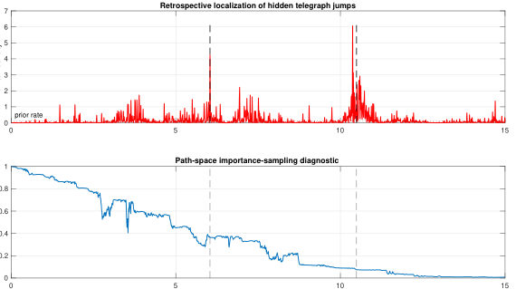
<figcaption class="paper-figure-caption"><b>Fig 1.</b> Figure 1: Filtering and smoothing of a hidden classical telegraph process and quantum state through a continuously monitored qubit. Subplots are numbered 1-4. 1: true telegraph state st (black), filtered posterior mean E[st | Y0:t] (blue), and smoothed posterior mean E[st | Y0:T] (red). The filter detects the switches only after future measurements have accumulated sufficient evidence, whereas the smoother uses those measurements retrospectively to localize the transitions close to their actual times. 2: filtered, and smoothed fidelities D ψt|ρF,S t ψt E . 3: smoothed posterior switch density qS k /dt; dashed vertical lines mark the true transitions and the horizontal dotted line is the prior...</figcaption>
</figure>
<figure class="paper-figure-card">
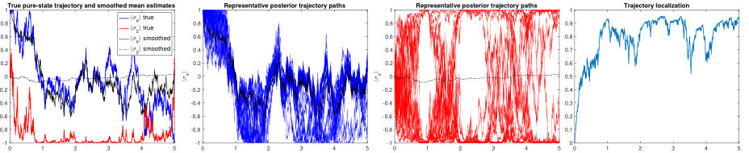
<figcaption class="paper-figure-caption"><b>Fig 2.</b> Figure 2: Smoothing by particle filtering. Subplots are numbered 1-4. 1: True pure quantum trajectory and smoothed reconstruction. 2-3: 20 highest weight particle trajectories approximating the posterior P(ψ0:T | x0:T). 4: Smoothed localization E((ψ† t σzψt)2 | x0:T). T = 5, κx = 0.12, κz = 1.0, dt = 0.001, N = 500.</figcaption>
</figure>
</div>

<p><strong>Summary.</strong> This paper introduces a Bayesian formulation for hybrid quantum-classical dynamics, unifying the evolution of quantum and classical variables into a single stochastic framework. It derives the governing hybrid Lindblad equation and shows that quantum state estimation can be mapped onto a classical hidden-state inference problem. This allows the application of standard time-series tools like particle filtering to analyze quantum trajectories.</p>
<p><strong>Why it may be interesting.</strong> This work provides a powerful, unified mathematical framework connecting quantum measurement theory (filtering/smoothing) directly to classical stochastic processes, which is highly relevant for modeling open quantum systems subject to continuous monitoring.</p>
<details>
<summary>Detailed structure</summary>
<p><strong>Main problem.</strong> The paper develops a rigorous Bayesian framework to describe and analyze diffusive quantum-classical dynamics, treating the joint evolution of the quantum state and classical variables.</p>
<p><strong>Main result.</strong> It establishes that the dynamics can be unified under a hybrid Lindblad equation, and it recasts quantum state estimation into a standard classical hidden-state inference problem solvable via particle filtering and smoothing.</p>
<p><strong>Method.</strong> The core methodology involves deriving the joint probability density evolution via a Fokker-Planck equation and then applying Bayesian inference techniques (filtering and smoothing) to the resulting stochastic process.</p>
<p><strong>Model / system.</strong> The model describes open quantum systems interacting with classical variables, governed by a joint stochastic process $(\psi, x)$. The dynamics are characterized by noise covariances $(C, \Gamma, Q)$ and lead to the hybrid Lindblad equation.</p>
<p><strong>Key observables.</strong> Filtered density matrix ($
ho_F^t$), smoothed density matrix ($
ho_S^t$), and the effect operator ($E_t$).</p>
<p><strong>Important parameters / regimes.</strong> Noise covariance matrices $(C, \Gamma, Q)$, and the detector efficiency ($\eta_{	ext{eff}}$).</p>
<p><strong>Assumptions / limitations.</strong> The derivation of the key dynamics requires assuming that the noise parameters $(C, Q, \Gamma)$ are independent of the quantum state $\psi$, and that the evolution of the second moment ($
ho_J$) is linear and autonomous.</p>
<p><strong>Figures summary.</strong> Not specified.</p>
<p><strong>Paper structure.</strong> The paper progresses from deriving the general stochastic evolution for the joint density, establishing the hybrid Lindblad form by imposing linearity constraints, and finally mapping the problem onto the established machinery of quantum filtering and smoothing via forward-backward Bayesian recursions.</p>
</details>
<details>
<summary>Abstract</summary>
<p>We develop a Bayesian formulation of diffusive quantum-classical dynamics by treating the wave function and classical variables as components of an ordinary stochastic process. The joint probability density P(ψ,x,t) obeys a classical Fokker-Planck equation, while the quantum state appears as its second moment. Requiring this second moment to evolve linearly and autonomously yields the hybrid Lindblad equation and its stochastic unravelings. This construction makes positivity and unraveling freedom immediate and gives a unified description of quantum noise, classical noise, and their correlations through the covariance matrices (C,Γ,Q).   The same stochastic representation turns quantum-classical state estimation into a classical hidden-state inference problem. Filtering and smoothing are Bayesian conditioning on the observed classical trajectory. We recover the stochastic master equation from the Kushner-Stratonovich equation with correlated noise and show how the quantum effect operator is related to the Bayesian backward message through the adjoint dynamics of the linear unraveling. The Bayesian posterior also defines a smoothed density matrix and, more generally, a posterior distribution over latent quantum-classical trajectories.   These quantities can be approximated with standard particle filtering and smoothing methods. Numerical examples show that smoothing improves reconstruction of a hidden quantum-classical trajectory and that the full trajectory posterior can retain structure, such as multimodality, that is absent from its density-matrix second moment. The resulting framework connects quantum filtering, retrodiction, and smoothing to the standard forward-backward machinery of Bayesian time-series inference.</p>
</details>
<p><sub><a href="#top">↑ back to top</a></sub></p>

<p><a id="paper-2608.20702"></a></p>
<h3 id="quantum-zeno-and-anti-zeno-responses-universal-spectral-criterion-for-measurement-induced-decay"><a href="http://arxiv.org/abs/2608.20702v1">Quantum Zeno and Anti-Zeno Responses: Universal Spectral Criterion for Measurement-Induced Decay</a></h3>
<p><strong>Authors:</strong> Yu-Xiang Chen, Yuan-De Jin, Wen-Long Ma<br>
<strong>Type:</strong> theory · <strong>Category:</strong> other · <strong>PDF:</strong> <a href="https://arxiv.org/pdf/2608.20702v1">https://arxiv.org/pdf/2608.20702v1</a><br>
<strong>Analysis basis:</strong> full PDF text, analyzed in chunks
<strong>Topic relevance:</strong> 🔥 <code>quantum measurements</code> <strong>4/5</strong> · <code>correlated / nonlocal dissipation</code> <strong>1/5</strong> · <code>driven-dissipative phase transition</code> <strong>1/5</strong> · <code>methods for driven-dissipative</code> <strong>1/5</strong> · <code>non-equilibrium universality</code> <strong>1/5</strong></p>
<div class="figure-strip-hint">↔ Scroll figures horizontally</div>
<div class="paper-figures-scroll">
<figure class="paper-figure-card">
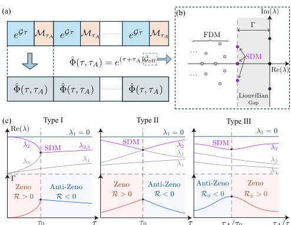
<figcaption class="paper-figure-caption"><b>Fig 1.</b> FIG. 1. Schematic illustration of quantum Zeno and anti-Zeno responses. (a) Each cycle contains a free evolution generated by G for time τ followed by a generalized measurement MτA for time τA, modeled by a concatenated channel induced by an effective generator Geff. (b) The eigenmodes of ˆGeff are divided into fast decay modes (FDMs) and SDMs. The decay behavior of the system is governed by the Liouvillian gap Γ, corresponding to the absolute value of the real part of SDM. (c) The Zeno-to-anti-Zeno response transitions (with a fixed τA) can occur for three types of spectral transitions: a spectral coalescence at an EP (Type-I), a spectral crossing of competing decay modes (Type-II), or a...</figcaption>
</figure>
<figure class="paper-figure-card">
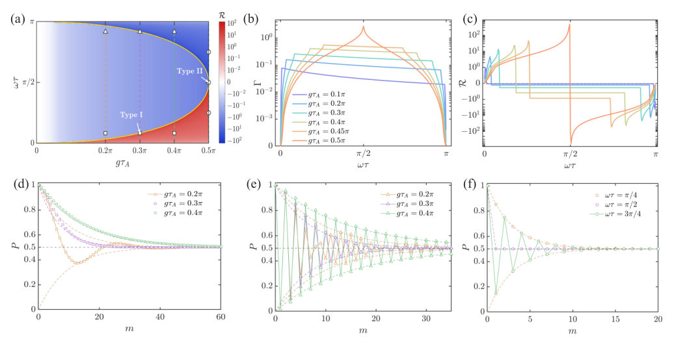
<figcaption class="paper-figure-caption"><b>Fig 2.</b> FIG. 2. Quantum Zeno and anti-Zeno responses of a unitarily evolving qubit to repetitive discrete-time measurements with tunable strength. (a) A phase diagram of the response R in the (gτA, ωτ) parameter plane. The lower half of the EP line (yellow curve) demarcates the boundary between the anti-Zeno response (R &lt; 0) and Zeno response (R &gt; 0). Vertical dashed lines mark different measurement strengths gτA corresponding to the cross-sections in (b) and (c). (b) The decay rate Γ of the SDM as a function of the evolution time ωτ for various gτA. Maxima of Γ coincide with EPs, which herald a transition in the underlying decay dynamics. (c) The response R of the spectral gap as a function of ωτ...</figcaption>
</figure>
<figure class="paper-figure-card">
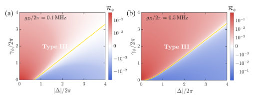
<figcaption class="paper-figure-caption"><b>Fig 3.</b> FIG. 3. Quantum Zeno and anti-Zeno responses in continuous-time measurements. Here we consider a supercon- ducting qubit under varying qubit-defect frequency detuning ∆and qubit measuring (dephasing) rate γϕ with (a) a weak qubit-defect coupling (gD/2π = 0.1 MHz) and (b) a stronger one (gD/2π = 0.5 MHz).</figcaption>
</figure>
</div>

<p><strong>Summary.</strong> This paper establishes a universal spectral criterion based on the Liouvillian spectral gap to characterize measurement-induced decay in quantum systems. It defines Zeno and Anti-Zeno responses by analyzing how this gap changes with measurement frequency. The framework is successfully applied to both discrete-time qubit and continuous-time superconducting qubit models, providing a general tool for quantum control.</p>
<p><strong>Why it may be interesting.</strong> This work provides a powerful, universal spectral diagnostic tool to predict and understand non-trivial dynamics (Zeno/Anti-Zeno) in open quantum systems, which is crucial for quantum control and measurement theory.</p>
<details>
<summary>Detailed structure</summary>
<p><strong>Main problem.</strong> The paper develops a general framework to characterize how the decay rate of a quantum system changes when subjected to repetitive quantum measurements, addressing the Quantum Zeno and Anti-Zeno effects.</p>
<p><strong>Main result.</strong> The measurement-induced decay rate is universally determined by the Liouvillian spectral gap, and the Zeno/Anti-Zeno transition is marked by spectral coalescence at Exceptional Points or smooth extrema of this gap.</p>
<p><strong>Method.</strong> The analysis models the evolution-measurement cycle using an effective Liouvillian generator, deriving a spectral criterion based on the derivative of the spectral gap with respect to the measurement frequency.</p>
<p><strong>Model / system.</strong> The framework is tested on two models: a discrete-time qubit undergoing periodic measurements (Ramsey interferometry) and a continuous-time superconducting-qubit defect model.</p>
<p><strong>Key observables.</strong> The Liouvillian spectral gap ($\Gamma$), the response function $R = -\partial\Gamma / \partial f$, and the survival probability $P(m)$.</p>
<p><strong>Important parameters / regimes.</strong> Measurement frequency ($f$ or $\gamma_\phi$), evolution time ($ au$), and measurement time ($    au_A$).</p>
<p><strong>Assumptions / limitations.</strong> The analysis relies on approximating the measurement process using effective Liouvillian generators and considering short-time or weak-measurement limits.</p>
<p><strong>Figures summary.</strong> Figures illustrate the cycle structure, the role of the effective generator, and show how the spectral gap's response $R$ changes across parameter regimes, demarcating Zeno ($R>0$) and anti-Zeno ($R<0$) regions via Exceptional Points.</p>
<p><strong>Paper structure.</strong> The paper first establishes the general framework using effective Liouvillians, then applies this to specific models (discrete-time qubit and continuous-time superconducting qubit), deriving the spectral criterion and demonstrating the transition mechanisms.</p>
</details>
<details>
<summary>Abstract</summary>
<p>We develop a general framework for characterizing the response of an evolving quantum system to repetitive quantum measurements. Modeling each evolution-measurement cycle as a quantum channel induced by an effective Liouvillian generator, we find that the Liouvillian spectral gap determines the measurement-induced decay rate. We analyze how the spectral gap responds to the measurement frequency, and define a quantum Zeno response as a decrease in the gap with increasing measurement frequency, and an anti-Zeno response as the opposite. We illustrate this criterion for both discrete-time and continuous-time quantum measurements. In an exactly solvable discrete-time qubit model, the exceptional-point spectral coalescence or spectral crossings mark the transition between Zeno and anti-Zeno responses, which can be experimentally distinguished from the long-time decay envelope of the survival probability. In a continuous-time superconducting-qubit defect model, the same transition manifests as smooth extrema of the spectral gap. Our results establish a universal spectral criterion for measurement-induced decay, offering a practical route to identify and manipulate these effects in generic quantum systems.</p>
</details>
<p><sub><a href="#top">↑ back to top</a></sub></p>

<p><a id="paper-2608.20676"></a></p>
<h3 id="continuous-angle-logical-rotations-in-the-steane-code"><a href="http://arxiv.org/abs/2608.20676v1">Continuous-angle logical rotations in the Steane code</a></h3>
<p><strong>Authors:</strong> Eric Huang, Daiwei Zhu, Matteo Ippoliti, Christopher Monroe, Michael J. Gullans<br>
<strong>Type:</strong> experiment · <strong>Category:</strong> quantum information and computing · <strong>PDF:</strong> <a href="https://arxiv.org/pdf/2608.20676v1">https://arxiv.org/pdf/2608.20676v1</a><br>
<strong>Analysis basis:</strong> full PDF text, analyzed in chunks
<strong>Topic relevance:</strong> 🔥 <code>QC/QI experiment</code> <strong>4/5</strong> · <code>quantum measurements</code> <strong>2/5</strong></p>
<div class="figure-strip-hint">↔ Scroll figures horizontally</div>
<div class="paper-figures-scroll">
<figure class="paper-figure-card">
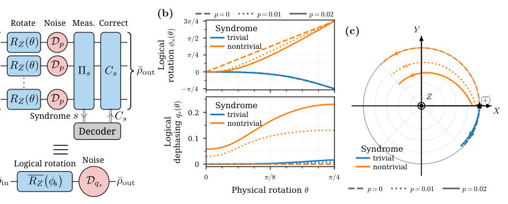
<figcaption class="paper-figure-caption"><b>Fig 1.</b> FIG. 1. Transversal logical rotation protocol in the Steane code with dephasing-only error model. (a) Single round of the continuous-angle rotation protocol takes a code state, applies a transversal rotation RZ(θ)⊗n with dephasing noise at rate p, measures a syndrome s and applies the correction Cs from the decoder. This is equivalent to a logical rotation by angle ϕs with dephasing at rate qs, each of which depend only on the measured syndrome s, physical rotation angle θ and physical dephasing rate p. (b) Theoretical dependence of channel parameters as physical rotation angle θ for selected physical dephasing rates p ∈{0, 0.01, 0.02}. Top: Logical rotation angle ϕs(p, θ). Bottom: Logical...</figcaption>
</figure>
<figure class="paper-figure-card">
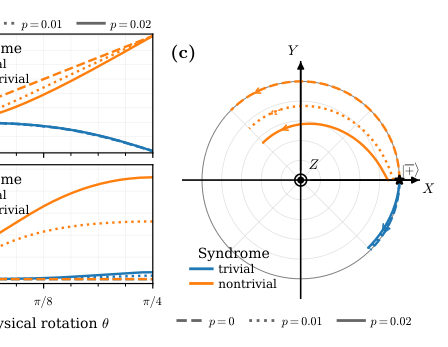
<figcaption class="paper-figure-caption"><b>Fig 2.</b> FIG. 3. Steane syndrome extraction uses transversal CNOT and Hadamard to fault-tolerantly measure the X-type and Z-type stabilizer generators of the Steane code using the clas- sical parity check matrices on the measured ancilla outcomes. This assumes the ancilla 0 states have been fault-tolerantly prepared.</figcaption>
</figure>
<figure class="paper-figure-card">
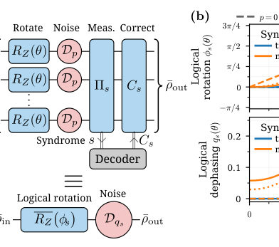
<figcaption class="paper-figure-caption"><b>Fig 3.</b> FIG. 2. A Steane code logical 0 state may be prepared unitarily and made fault-tolerant by measuring the flag qubit and post-selecting on the flag qubit being measured in the |0⟩ state [25].</figcaption>
</figure>
<figure class="paper-figure-card">
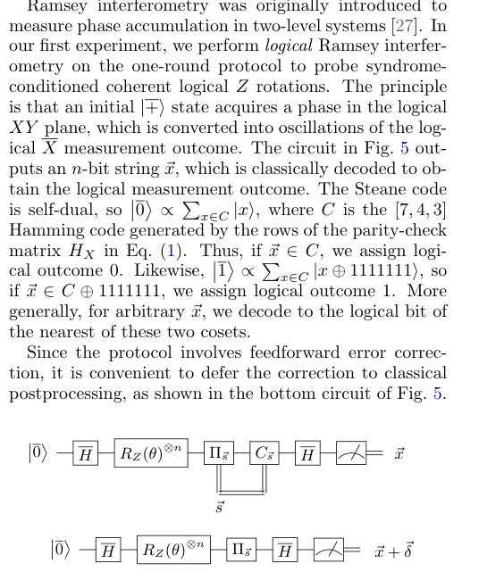
<figcaption class="paper-figure-caption"><b>Fig 4.</b> FIG. 5. Top: The logical Ramsey interferometry circuit pre- pares the logical |+⟩state, performs one round of the Z- rotation protocol, and measures in the logical X basis. Steane syndrome extraction is used for Π⃗s. Bottom: Equivalent cir- cuit with the decoder correction Cs = ⊗jZzj propagated to a flip in the classical outcome ⃗δ = HX⃗z, which may be removed in postprocessing.</figcaption>
</figure>
<figure class="paper-figure-card">
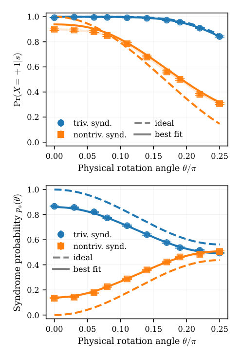
<figcaption class="paper-figure-caption"><b>Fig 5.</b> FIG. 6. Logical Ramsey experiment with input state |+⟩ using the one-round protocol. Top: Syndrome-conditioned Ramsey signal P(X = +1 | s) versus physical rotation an- gle θ for the trivial (blue) and aggregated nontrivial (or- ange) syndrome groups. Points with error bars show the data, dashed curves show the ideal prediction, and solid curves show the best-fit dephasing model. Bottom: Cor- responding syndrome-group probabilities ps(θ) for the same two branches, with the same line conventions. The best-fit physical dephasing parameter is p = (2.13 ± 0.07)%.</figcaption>
</figure>
</div>

<p><strong>Summary.</strong> This paper reports an experimental demonstration of continuous-angle logical Z rotations using the Steane code on a trapped-ion quantum processor. By applying transversal physical rotations followed by syndrome extraction, the authors show that the logical operation is controllable and tunable. This work provides a key proof-of-principle for building fault-tolerant quantum computation using standard error correction techniques.</p>
<p><strong>Why it may be interesting.</strong> This work directly addresses fault-tolerance and gate universality in physical quantum hardware, providing crucial experimental validation for theoretical concepts in quantum error correction codes.</p>
<details>
<summary>Detailed structure</summary>
<p><strong>Main problem.</strong> The paper aims to experimentally demonstrate continuous-angle logical Z rotations within the Steane code, proving a method for continuously tunable non-Clifford logical gates.</p>
<p><strong>Main result.</strong> The authors successfully observed coherent, syndrome-dependent logical rotations and demonstrated angle cancellation in a two-round protocol, confirming the feasibility of implementing tunable logical gates.</p>
<p><strong>Method.</strong> The protocol involves applying transversal physical Z rotations, followed by syndrome extraction and decoding, and characterizing the resulting logical channel using Ramsey interferometry and process tomography.</p>
<p><strong>Model / system.</strong> The experiment is performed on the IonQ Forte trapped-ion processor using the $[[7, 1, 3]]$ Steane code. The theoretical framework models the logical channel as a composition of rotation, dephasing, syndrome extraction, and correction.</p>
<p><strong>Key observables.</strong> Logical rotation angle ($\phi_s$), logical dephasing rate ($q_s$), and syndrome-conditioned Ramsey fringe probabilities.</p>
<p><strong>Important parameters / regimes.</strong> Physical rotation angle ($  heta$), dephasing noise rate ($p$), and the code parameters of the Steane code.</p>
<p><strong>Assumptions / limitations.</strong> The analysis primarily uses a dephasing-only error model, and the implementation is limited by the lack of mid-circuit measurement and feedforward on the hardware.</p>
<p><strong>Figures summary.</strong> Figures illustrate the single-round protocol showing theoretical dependence of logical rotation/dephasing on $ heta$ and noise; subsequent figures detail the two-round tomography circuit and plot the fitted logical rotation angle and dephasing parameter versus $ heta$.</p>
<p><strong>Paper structure.</strong> The paper details the theoretical derivation of the logical channel action under noise, presents the single-round experimental demonstration using Ramsey interferometry, and concludes with a two-round protocol to test for angle cancellation and low dephasing.</p>
</details>
<details>
<summary>Abstract</summary>
<p>We experimentally demonstrate continuous-angle logical $Z$ rotations in the $[[7,1,3]]$ Steane code on the IonQ Forte trapped-ion processor. A round of the protocol applies a transversal physical $Z$ rotation by $θ$, followed by Steane syndrome extraction and decoding, which induces a syndrome-dependent logical $Z$ rotation. We analytically derive the effect of dephasing noise on the logical rotation angle and logical dephasing rate. Using logical Ramsey interferometry, we observe coherent syndrome-dependent logical rotations from a single round of the protocol. We find that the logical channel reconstructed from process tomography is a noisy logical $Z$ rotation well explained by a dephasing model. We further implement a two-round protocol applying physical rotations $+θ$ and $-θ$, and observe cancellation of the total logical angle with low logical dephasing for repeated trivial syndromes. This constitutes a proof-of-principle demonstration of continuously tunable non-Clifford logical gates by transversal rotations and standard error correction in a small quantum code.</p>
</details>
<p><sub><a href="#top">↑ back to top</a></sub></p>

<p><a id="paper-2608.20742"></a></p>
<h3 id="hybrid-dynamical-decoupling-and-coherent-driving-for-high-fidelity-nuclear-spin-control-in-diamond"><a href="http://arxiv.org/abs/2608.20742v1">Hybrid dynamical decoupling and coherent driving for high-fidelity nuclear-spin control in diamond</a></h3>
<p><strong>Authors:</strong> Jiwon Jeon, Donghun Jung, Eunsang Lee, Junghyun Lee<br>
<strong>Type:</strong> theory · <strong>Category:</strong> quantum information and computing · <strong>PDF:</strong> <a href="https://arxiv.org/pdf/2608.20742v1">https://arxiv.org/pdf/2608.20742v1</a><br>
<strong>Analysis basis:</strong> full PDF text, analyzed in chunks
<strong>Topic relevance:</strong> 🔥 <code>QC/QI experiment</code> <strong>4/5</strong> · <code>quantum measurements</code> <strong>2/5</strong></p>
<div class="figure-strip-hint">↔ Scroll figures horizontally</div>
<div class="paper-figures-scroll">
<figure class="paper-figure-card">
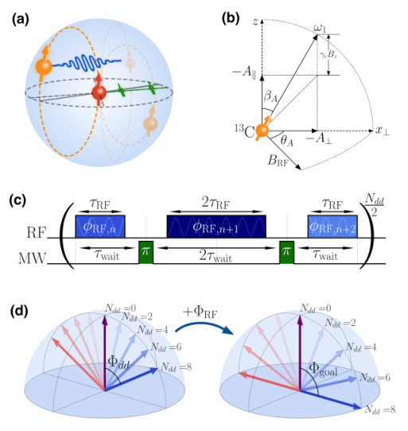
<figcaption class="paper-figure-caption"><b>Fig 1.</b> FIG. 1. Overview of the hybrid dynamical-decoupling radio-frequency (H-DDrf) protocol. (a) Physical implemen- tation of an NV electron spin coupled to a target 13C nuclear spin, where microwave (MW, green) and radio-frequency (RF, blue) pulses control the electron and nuclear spins, respec- tively. (b) Hyperfine geometry of the 13C nuclear spin in the 𝑚𝑠= −1 manifold, defining the hyperfine azimuthal angle 𝜃𝐴 and the quantization-axis misalignment 𝛽𝐴. (c) Pulse-train unit cell showing the RF phase updates 𝜑RF,𝑛, RF duration 𝜏RF, and inter-𝜋-pulse waiting time 𝜏wait. (d) Hybridized gate construction on the Bloch hemispheres. The DD-induced ro- tation Φ𝑑𝑑(𝑁𝑑𝑑= 8) is supplemented by an RF...</figcaption>
</figure>
<figure class="paper-figure-card">

<figcaption class="paper-figure-caption"><b>Fig 2.</b> FIG. 3. Frequency selectivity and geometric phase matching of H-DDrf. (a) CR fidelity ℱCR under H-DDrf (blue), DDrf (dashed red), and DD-only (dotted orange) control for a tar- get 13C spin with (𝐴‖, 𝐴⊥)/2𝜋= (−200, 50) kHz, 𝜃𝐴= 0, and 𝑁𝑑𝑑= 16, as a function of the RF drive frequency 𝜔RF. The DDrf parameters are chosen as in Fig. 2. (b) ℱCR under H-DDrf as a function of the initial RF phase for nuclear spins with fixed 𝛿𝐴/2𝜋= 220 kHz and varying 𝛽𝐴∈{0∘, 1∘, 2∘, 3∘}. The phase offset, Δ𝜑, is defined relative to the geometrically matched initial phase 𝜑0, given by Eq. (5).</figcaption>
</figure>
<figure class="paper-figure-card">

<figcaption class="paper-figure-caption"><b>Fig 3.</b> FIG. 2. Conditional-rotation (CR) fidelity ℱCR and rotation angle ΦCR for DD, DDrf, and H-DDrf control of a target spin with (𝐴‖, 𝐴⊥)/2𝜋= (−200, 50) kHz and 𝜃𝐴= 0. (a),(b) ℱCR and ΦCR as functions of RF Rabi frequency, ΩRF, for fixed 𝑁𝑑𝑑= 16. (c),(d) ℱCR and ΦCR as functions of gate duration, 𝑇gate = 𝑁𝑑𝑑𝑇train, for even 𝑁𝑑𝑑at fixed ΩRF/2𝜋= 1.50 kHz. Hybrid+𝜋denotes H-DDrf with the initial RF phase shifted by 𝜋.</figcaption>
</figure>
<figure class="paper-figure-card">

<figcaption class="paper-figure-caption"><b>Fig 4.</b> FIG. 4. Hyperfine-parameter distribution and coherence- weighted operation fidelity. (a) Distribution of possible hy- perfine parameters in the 𝛿𝐴–𝛽𝐴phase space, obtained from a diamond-lattice survey assuming 100% 13C abundance. For carbon sites 5–7 Å from the NV center, the parameters are estimated using the secular electron-nuclear magnetic dipole- dipole interaction [1, 10]. (b) Coherence-weighted CR fidelity, ℱCR𝑤𝑐, for H-DDrf (blue), H-DDrf without RF assistance (green dotted), and DDrf following Ref. [10] (orange dash- dotted), evaluated for nuclear spins with 𝛿𝐴/2𝜋= 220 kHz and 𝛽𝐴∈[0∘, 40∘]. The vertical dotted line marks the onset of fidelity degradation in DDrf. Here, 𝑤𝑐accounts...</figcaption>
</figure>
</div>

<p><strong>Summary.</strong> This paper introduces a novel Hybrid Dynamical-Decoupling and Radio-Frequency (H-DDrf) control technique for manipulating nuclear spins in diamond NV centers. By intelligently combining the selectivity of DD with the continuous tunability of RF driving, the method enhances quantum control fidelity. This advancement expands the usable quantum memory capacity for room-temperature quantum processors.</p>
<p><strong>Why it may be interesting.</strong> This work directly addresses the practical limitations of scaling quantum memories by providing a robust, high-fidelity control mechanism for multi-spin systems, which is central to quantum computation.</p>
<details>
<summary>Detailed structure</summary>
<p><strong>Main problem.</strong> The primary challenge is achieving high-fidelity, continuous quantum control over large registers of nuclear spins coupled to NV centers in diamond at room temperature.</p>
<p><strong>Main result.</strong> The proposed Hybrid Dynamical-Decoupling and Radio-Frequency (H-DDrf) control scheme successfully maintains high fidelity while reducing required RF power and gate duration compared to existing methods.</p>
<p><strong>Method.</strong> The authors combine the frequency-selective conditional evolution provided by Dynamical Decoupling (DD) with a geometrically phase-matched RF drive to complete the target rotation, achieving continuous tunability.</p>
<p><strong>Model / system.</strong> The system utilizes Nitrogen-Vacancy (NV) centers in diamond, employing surrounding $^{13}	ext{C}$ nuclear spins as long-lived quantum memories. The control relies on understanding the hyperfine coupling Hamiltonian ($\hat{H}_0$) and its geometric dependencies.</p>
<p><strong>Key observables.</strong> Conditional-operation contrast ($\mathcal{F}_{	ext{CR}}$) and coherence-weighted fidelity ($\mathcal{F}_{	ext{CR}}^{w_c}$), measured as functions of RF frequency and initial RF phase.</p>
<p><strong>Important parameters / regimes.</strong> Hyperfine geometry parameters ($    heta_A, eta_A$), RF Rabi frequency ($\Omega_{   ext{RF}}$), and the required phase matching condition ($\varphi_0 =  heta_A - \delta\varphi$).</p>
<p><strong>Assumptions / limitations.</strong> The DD sequence establishes a frequency-selective baseline, and the RF drive acts as a resonant correction to complete the operation, rather than replacing the DD dynamics entirely.</p>
<p><strong>Figures summary.</strong> Figures illustrate the H-DDrf protocol, compare controllability/tunability against DD-only and DDrf, and show fidelity measurements ($\mathcal{F}_{	ext{CR}}$) across different RF parameters and hyperfine geometries.</p>
<p><strong>Paper structure.</strong> The paper first reviews the limitations of existing DD and DDrf methods, then introduces the H-DDrf protocol, derives the necessary phase-matching conditions, and finally presents detailed comparisons of fidelity and robustness against various experimental imperfections.</p>
</details>
<details>
<summary>Abstract</summary>
<p>Nitrogen-vacancy (NV) centers in diamond provide room-temperature electron-nuclear spin registers for quantum sensing and quantum information processing, with surrounding 13C nuclear spins serving as long-lived quantum memories. However, coherent control of large nuclear-spin registers is limited by finite electron-spin coherence and spectral addressability. Existing approaches follow two complementary strategies: dynamical-decoupling (DD) gates exploit filter-function resonances to realize selective conditional evolution but permit only discrete rotation angles, whereas dynamical-decoupling radio-frequency (DDrf) control restores continuous tunability at the cost of stringent hyperfine-geometry and RF-power requirements. Here, we introduce hybrid dynamical-decoupling and radio-frequency (H-DDrf) control, which preserves the DD-induced conditional evolution and employs a geometrically phase-matched RF drive to complete the target operation. This approach reduces both RF power and gate duration while maintaining high-fidelity control, thereby expanding the accessible 13C nuclear-spin register for room-temperature NV-based quantum memories and quantum processors.</p>
</details>
<p><sub><a href="#top">↑ back to top</a></sub></p>

<p><a id="paper-2608.21004"></a></p>
<h3 id="when-more-becomes-less-topology-reversed-three-qubit-gate-performance-on-ibm-quantum-processors"><a href="http://arxiv.org/abs/2608.21004v1">When More Becomes Less: Topology-Reversed Three-Qubit Gate Performance on IBM Quantum Processors</a></h3>
<p><strong>Authors:</strong> Simona K. Grigorova, Stancho S. Stanchev, Nikolay V. Vitanov<br>
<strong>Type:</strong> experiment · <strong>Category:</strong> quantum information and computing · <strong>PDF:</strong> <a href="https://arxiv.org/pdf/2608.21004v1">https://arxiv.org/pdf/2608.21004v1</a><br>
<strong>Analysis basis:</strong> full PDF text, analyzed in chunks
<strong>Topic relevance:</strong> 🔥 <code>QC/QI experiment</code> <strong>4/5</strong> · <code>quantum measurements</code> <strong>1/5</strong></p>
<div class="figure-strip-hint">↔ Scroll figures horizontally</div>
<div class="paper-figures-scroll">
<figure class="paper-figure-card">

<figcaption class="paper-figure-caption"><b>Fig 1.</b> FIG. 1. Exact CCZ6 and CCZ8 decompositions of the CCZ gate. CCZ6 is the standard 6-CX circuit, which contains a non-nearest-neighbor endpoint interaction when embedded on a linear chain, whereas every two-qubit interaction in CCZ8 acts on adjacent qubits. We note that the native two-qubit gates on IBM processors used here are CZ, and hence in the transpilation the CX gates in the circuits in this figure are replaced by CZ sandwiched by two Hadamard gates.</figcaption>
</figure>
<figure class="paper-figure-card">

<figcaption class="paper-figure-caption"><b>Fig 2.</b> FIG. 2. EFS estimates of the infidelity of CCZ6 and CCZ8 on (a) ibm fez and (b) ibm kingston. Each point compares the two implementations on the same physical triple. The dashed line denotes equal infidelity; points below the line correspond to lower infidelity for CCZ8.</figcaption>
</figure>
<figure class="paper-figure-card">

<figcaption class="paper-figure-caption"><b>Fig 3.</b> FIG. 3. EFS errors of the two circuits versus (a) the worse and (b) the mean of the two native CZ errors on ibm kingston. The displayed linear fits of the form y = a + bx are included as exploratory baselines and are not interpreted as physical scaling laws.</figcaption>
</figure>
<figure class="paper-figure-card">

<figcaption class="paper-figure-caption"><b>Fig 4.</b> FIG. 4. Measured hypergraph-state infidelity of the CCZ6 and CCZ8 circuits on (a) ibm fez and (b) ibm kingston. Each point compares the two circuits on the same physical triple. Points below the dashed equality line favor the topology- compatible implementation CCZ8.</figcaption>
</figure>
<figure class="paper-figure-card">

<figcaption class="paper-figure-caption"><b>Fig 5.</b> FIG. 5. Phase-altered interleaved randomized benchmark- ing comparison of the two compiled CCZ decompositions on ibm kingston. The horizontal coordinate corresponds to the nominal CCZ6 decomposition, which compiles to 12 native CZ gates on the linear physical topology, and the vertical coor- dinate corresponds to the CCZ8 LNN decomposition, which retains eight native CZ gates. Each marker represents one physical three-qubit placement and is positioned at the mid- point of the phase-stripped and phase-dressed PA-IRB esti- mates. Horizontal and vertical bars span the corresponding stripped–dressed values for the CCZ6 and CCZ8 realizations, respectively; these spans are not statistical...</figcaption>
</figure>
</div>

<p><strong>Summary.</strong> This work experimentally compares two ways to implement a three-qubit CCZ gate on real quantum hardware. By testing the theoretically best circuit against a more hardware-friendly, nearest-neighbor circuit, the authors demonstrate that physical connectivity dictates performance. The results show that the simpler, topology-respecting circuit performs better, even if it is not the abstractly minimal gate count.</p>
<p><strong>Why it may be interesting.</strong> It provides concrete, hardware-level evidence that physical connectivity constraints can fundamentally alter the optimal circuit choice for complex quantum gates, a critical consideration for scaling quantum computation.</p>
<details>
<summary>Detailed structure</summary>
<p><strong>Main problem.</strong> The paper compares the performance of two different exact decompositions for the three-qubit CCZ gate when implemented on hardware with restricted connectivity.</p>
<p><strong>Main result.</strong> The topology-compatible decomposition ($   ext{CCZ8}$), which uses fewer native nearest-neighbor gates, consistently outperformed the theoretically optimal but connectivity-intensive decomposition ($    ext{CCZ6}$) across multiple fidelity benchmarks.</p>
<p><strong>Method.</strong> The performance was measured using Ensemble Feature Selection (EFS), hypergraph state preparation, and Phase-Altered Interleaved Randomized Benchmarking (PA-IRB) on real quantum hardware.</p>
<p><strong>Model / system.</strong> The experiments were conducted on 156-qubit IBM Quantum Heron processors ($ ext{ibm_fez}$ and $    ext{ibm_kingston}$) using sampled linear triples of qubits.</p>
<p><strong>Key observables.</strong> Process infidelity ($\epsilon$) measured via EFS and hypergraph state fidelity ($\epsilon_{HG}$); PA-IRB decay parameters.</p>
<p><strong>Important parameters / regimes.</strong> The comparison hinges on the physical gate count: $ ext{CCZ6}$ compiles to 12 CZ gates, while $ ext{CCZ8}$ retains 8 native CZ gates.</p>
<p><strong>Assumptions / limitations.</strong> The comparison assumes a fixed compilation protocol and isolates the effect of connectivity by comparing two fixed, exact gate decompositions.</p>
<p><strong>Figures summary.</strong> Figures show comparative infidelity estimates (EFS, Hypergraph) and decay parameters (PA-IRB) for $    ext{CCZ6}$ versus $ ext{CCZ8}$ on the IBM processors, consistently favoring the $   ext{CCZ8}$ circuit.</p>
<p><strong>Paper structure.</strong> The paper introduces the problem by contrasting the abstractly optimal $   ext{CCZ6}$ with the topology-compatible $   ext{CCZ8}$. It then systematically tests both circuits using EFS, hypergraph state measurements, and PA-IRB, concluding that physical connectivity dictates performance over abstract gate count.</p>
</details>
<details>
<summary>Abstract</summary>
<p>The exact Toffoli gate admits a six-CX decomposition, denoted by $CCX_6$, that is optimal under unrestricted two-qubit connectivity. On a linear three-qubit topology, however, $CCX_6$ contains 4 nearest-neighbor CX gates and 2 non-nearest-neighbor CX gates. By contrast, an alternative exact decomposition, denoted by $CCX_8$, uses only 8 nearest-neighbor CX gates. Because CCX is locally equivalent to CCZ, we perform the experiments using the corresponding $\cczs$ and $\cczl$ circuits. We compare these circuits on sampled linear triples of the 156-qubit IBM Quantum Heron processors \texttt{ibm_fez} and \texttt{ibm_kingston}. Under the compilation protocol, the nominal $\cczs$ circuit becomes a twelve-CZ implementation, whereas the linear-nearest-neighbor circuit retains eight native CZ gates. Experimentally measured ensemble-feature-selection estimates favor the eight-CZ realization on nearly all retained triples. We test the same ordering by preparing a three-qubit hypergraph state, which probes the coherent conditional phase rather than only computational-basis populations. The measured hypergraph-state infidelity is lower for the $\cczl$ circuit for most triples on both processors. Phase-altered interleaved randomized benchmarking provides a complementary comparison of Clifford surrogates preserving the two compiled entangling structures. Within the scope of the tested circuits and phase-sensitive input state, the results demonstrate that hardware connectivity can reverse the operational ranking of exact decompositions: a circuit with more abstract two-qubit gates can yield the better physical implementation.</p>
</details>
<p><sub><a href="#top">↑ back to top</a></sub></p>

<p><a id="paper-2608.20917"></a></p>
<h3 id="the-trachenko-zaccone-equation-nonlinear-relaxation-from-glasses-to-complex-systems"><a href="http://arxiv.org/abs/2608.20917v1">The Trachenko-Zaccone equation: nonlinear relaxation from glasses to complex systems</a></h3>
<p><strong>Authors:</strong> Alessio Zaccone, Valeriy V. Ginzburg, Oleg V. Gendelman, Sofia F. Mauro, John C. Mauro<br>
<strong>Type:</strong> theory · <strong>Category:</strong> disordered systems and neural networks · <strong>PDF:</strong> <a href="https://arxiv.org/pdf/2608.20917v1">https://arxiv.org/pdf/2608.20917v1</a><br>
<strong>Analysis basis:</strong> full PDF text, analyzed in chunks
<strong>Topic relevance:</strong> <code>correlated / nonlocal dissipation</code> <strong>3/5</strong> · <code>driven-dissipative phase transition</code> <strong>3/5</strong> · <code>non-equilibrium universality</code> <strong>3/5</strong> · <code>scars &amp; prethermalization</code> <strong>3/5</strong> · <code>Keldysh / 2PI / non-Gaussian methods</code> <strong>2/5</strong> · <code>methods for driven-dissipative</code> <strong>2/5</strong> · <code>quantum measurements</code> <strong>2/5</strong> · <code>Frenkel-Kontorova</code> <strong>1/5</strong> · <code>analog quantum simulation</code> <strong>1/5</strong></p>
<div class="figure-strip-hint">↔ Scroll figures horizontally</div>
<div class="paper-figures-scroll">
<figure class="paper-figure-card">

<figcaption class="paper-figure-caption"><b>Fig 1.</b> Figure 1. Historical evolution of the ideas leading to the Trachenko–Zaccone equation. Beginning with Kohlrausch’s empirical stretched-exponential relaxation (1854) and Debye’s theory of exponential relaxation (1929), progressively deeper physical understanding emerged through Frenkel’s kinetic theory of liquids [7], Phillips’ demonstration of the universality of stretched-exponential relaxation, and Trachenko’s feed-forward interaction mechanism for interacting local relaxation events. These developments culminated in the formulation of the Trachenko–Zaccone equation in 2021, which unified Debye, stretched-exponential, compressed-exponential and logarithmic relaxation within a single...</figcaption>
</figure>
<figure class="paper-figure-card">

<figcaption class="paper-figure-caption"><b>Fig 2.</b> Figure 2. Experimental motivation for a unified description of stretched- and compressed-exponential relaxation. Normalized intensity-correlation functions measured by X-ray photon correlation spectroscopy in a metallic glass at different temperatures. The relaxation changes from stretched-exponential behaviour (β &lt; 1) at higher temperatures to compressed-exponential behaviour (β &gt; 1) at lower temperatures. The inset shows the corresponding temperature dependence of the exponent β, with the vertical line indicating the glass-transition region. The continuous evolution of β across unity provides an important motivation for seeking a single nonlinear dynamical equation capable of describing...</figcaption>
</figure>
<figure class="paper-figure-card">

<figcaption class="paper-figure-caption"><b>Fig 3.</b> Figure 3. Schematic representation of the two feedback mechanisms underlying the Trachenko–Zaccone equation. (a) Feed-forward hindrance in the stretched- exponential relaxation (SER) regime. Earlier concordant local relaxation events (LREs) redistribute stress onto regions that have not yet relaxed, progressively increasing the activation barrier V (n) for subsequent events. At the coarse-grained level this corresponds to V (n) = V0 + V1n/nr, and hence to K &gt; 0. (b) Facilitation in the compressed-exponential relaxation (CER) regime. Avalanche-like rearrangements facilitate subsequent LREs, so that the effective activation barrier decreases as relaxation proceeds. This corresponds to V (n) =...</figcaption>
</figure>
<figure class="paper-figure-card">

<figcaption class="paper-figure-caption"><b>Fig 4.</b> Figure 4. Numerical solutions illustrating the two non-Debye regimes generated by the Trachenko–Zaccone equation. For positive feedback parameter K &gt; 0, the numerical solutions are accurately represented by stretched-exponential KWW functions with β &lt; 1 (SER). For negative K &lt; 0, the same evolution equation generates compressed-exponential relaxation with β &gt; 1 (CER). The Debye law, β = 1, lies between these two regimes and corresponds to K = 0. The figure illustrates that stretched and compressed relaxation do not require separate phenomenological equations but emerge from opposite signs of the same nonlinear feedback parameter.</figcaption>
</figure>
<figure class="paper-figure-card">

<figcaption class="paper-figure-caption"><b>Fig 5.</b> Figure 4 illustrates this result directly. The same first-order nonlinear equation produces relaxation curves that are well represented by KWW functions on either side of β = 1. The parameter K therefore provides a continuous dynamical coordinate connecting SER, Debye relaxation and CER.</figcaption>
</figure>
</div>

<p><strong>Summary.</strong> This review introduces the Trachenko-Zaccone equation as a unifying, nonlinear dynamical model for describing complex relaxation phenomena in disordered materials. It shows that this single equation can describe stretched, Debye, and compressed relaxation regimes based on the nature of the nonlinear feedback. The work elevates the equation from a specialized glass model to a general tool for complex systems dynamics.</p>
<p><strong>Why it may be interesting.</strong> The concept of nonlinear feedback governing relaxation rates is highly relevant to open quantum systems, particularly those exhibiting glassy dynamics or slow relaxation, suggesting a generalized framework beyond simple Markovian decay.</p>
<details>
<summary>Detailed structure</summary>
<p><strong>Main problem.</strong> The paper addresses the challenge of describing non-Debye relaxation in disordered condensed matter systems, moving beyond simple exponential decay laws.</p>
<p><strong>Main result.</strong> It establishes the Trachenko-Zaccone equation as a general nonlinear feedback framework capable of unifying stretched, Debye, and compressed relaxation regimes.</p>
<p><strong>Method.</strong> The review traces the conceptual development of the equation, analyzing its mathematical structure and proposing extensions to incorporate spatial and temporal dependencies.</p>
<p><strong>Model / system.</strong> The core model is the Trachenko-Zaccone equation, applied to structural glasses, supercooled liquids, and polymers. It models relaxation as a nonlinear feedback process arising from local, interacting events.</p>
<p><strong>Key observables.</strong> Relaxation functions, stretched-exponential decay, compressed-exponential decay, and the evolution of an observable $y(t)$ towards equilibrium.</p>
<p><strong>Important parameters / regimes.</strong> The stretching exponent ($eta$), relaxation time ($   au$), and the nonlinear feedback parameter ($K$) which dictates the relaxation regime.</p>
<p><strong>Assumptions / limitations.</strong> The primary assumption is that the relaxation dynamics can be captured by a general nonlinear rate-feedback principle, which is then shown to encompass various physical limits.</p>
<p><strong>Figures summary.</strong> Figure 1 summarizes the historical evolution of relaxation theories, linking Kohlrausch, Debye, and Phillips to the modern Trachenko-Zaccone formulation.</p>
<p><strong>Paper structure.</strong> The paper reviews the historical context (Debye vs. KWW), details the physical origin of the equation via Trachenko's mechanism, analyzes the mathematical structure, and concludes by discussing advanced generalizations like spatial and stochastic extensions.</p>
</details>
<details>
<summary>Abstract</summary>
<p>The Trachenko-Zaccone equation provides a compact nonlinear dynamical framework for describing non-Debye relaxation in disordered condensed matter. Originally developed to rationalize stretched- and compressed-exponential relaxation in liquids and glasses from the dynamics of interacting local relaxation events, the same equation has subsequently appeared in broader contexts, including polymer relaxation and nonlinear models of global population dynamics. This review retraces the conceptual development of the equation, with particular emphasis on its physical origin in Kostya Trachenko's feed-forward interaction mechanism, its mathematical structure, and its possible generalizations. We also include personal recollections of the work with Kostya Trachenko at Queen Mary University of London in August 2019, during which the equation emerged in essentially its present form. After reviewing applications to stress relaxation, glassy materials, polymer relaxation and population dynamics, we discuss future directions including time-dependent feedback parameters, coupled order parameters, heterogeneous and spatially resolved formulations, flux terms, network versions and stochastic extensions. The central theme of the review is that the Trachenko-Zaccone equation should be viewed not only as a model of glassy relaxation, but as a general nonlinear feedback equation with potential applications across complex systems.</p>
</details>
<p><sub><a href="#top">↑ back to top</a></sub></p>

<p><a id="paper-2608.20527"></a></p>
<h3 id="photon-mediated-thermodynamics-and-density-fluctuations-in-an-ensemble-of-laser-cooled-cesium-atoms"><a href="http://arxiv.org/abs/2608.20527v1">Photon-mediated thermodynamics and density fluctuations in an ensemble of laser-cooled Cesium atoms</a></h3>
<p><strong>Authors:</strong> Arnab Ghosh, Inderpreet Kaur, Hemant Yadav, Shiva Kant Dwivedi, R Shanmukesh, Mithun Thudiyangal, Matthew J. Davis, Bodhaditya Santra<br>
<strong>Type:</strong> experiment · <strong>Category:</strong> quantum gases · <strong>PDF:</strong> <a href="https://arxiv.org/pdf/2608.20527v1">https://arxiv.org/pdf/2608.20527v1</a><br>
<strong>Analysis basis:</strong> full PDF text, analyzed in chunks
<strong>Topic relevance:</strong> <code>analog quantum simulation</code> <strong>3/5</strong> · <code>driven-dissipative phase transition</code> <strong>3/5</strong> · <code>non-equilibrium universality</code> <strong>3/5</strong> · <code>quantum optics experiment</code> <strong>3/5</strong> · <code>correlated / nonlocal dissipation</code> <strong>2/5</strong> · <code>Keldysh / 2PI / non-Gaussian methods</code> <strong>1/5</strong> · <code>methods for driven-dissipative</code> <strong>1/5</strong> · <code>quantum measurements</code> <strong>1/5</strong></p>
<div class="figure-strip-hint">↔ Scroll figures horizontally</div>
<div class="paper-figures-scroll">
<figure class="paper-figure-card">

<figcaption class="paper-figure-caption"><b>Fig 1.</b> Fig. 1 Experimental setup and timing sequence for 3D MOT of 133Cs. (a) Energy level diagram showing the cooling and repump transitions used for laser cooling. (b) Schematic of the 3D magneto-optical trap formed by three retro-reflected laser beams and a quadrupole magnetic field; fluorescence is collected via a 4f imaging system and detected using a CMOS camera. Representative MOT fluorescence im- age is shown on the right. (c) Timing diagram illustrating the experimental sequence: the MOT is loaded for 2 seconds with cooling and repump lasers and magnetic gradient field on; at t = 0, all fields are turned off allowing atoms to expand freely for 0.5 ms, followed by a 3 ms imaging pulse with...</figcaption>
</figure>
<figure class="paper-figure-card">

<figcaption class="paper-figure-caption"><b>Fig 2.</b> Fig. 2 Histograms of cloud-width fluctuations for δ = 6, 8, 14, and 16 MHz, obtained from 500 fluorescence images. The horizontal axis represents the deviation from the mean width, σx −⟨σx⟩. The red curves are Gaussian fits used to determine the fluctuation spread.</figcaption>
</figure>
<figure class="paper-figure-card">

<figcaption class="paper-figure-caption"><b>Fig 3.</b> Fig. 3 (a) Mean vibrational occupation number, ¯n, calcu- lated from the measured spread of the cloud-width distribu- tions using Eq. (2). (b) Optical depth determined from the measured atom number and cloud size using Eq. (3). with er- ror bars reflect the propagated 1σ uncertainty from the Gaus- sian fit to the cloud radius.</figcaption>
</figure>
<figure class="paper-figure-card">

<figcaption class="paper-figure-caption"><b>Fig 4.</b> Fig. 4 Variation of the interaction parameter Ω(left) and the polytropic exponent γ (right) with trapping-laser detuning. The parameters are extracted by fitting numerical solutions of the generalized Lane–Emden equation to the experimen- tally measured density profiles. The error bars represent the estimated uncertainties associated with the fitted parameters.</figcaption>
</figure>
<figure class="paper-figure-card">

<figcaption class="paper-figure-caption"><b>Fig 5.</b> Fig. 5 (a) Correlation length and total power of relative atom density fluctuations as a function of laser detuning. The observed trends are consistent with a gradual evolution to- ward a more fluctuation-dominated regime. The error bars correspond to 1σSD deviation from the mean across 30 dif- ferent realizations. (b) Power spectral density, E(k), for vari- ous values of the detuning parameter δ. The inset shows the scaling exponent α obtained for different values of δ. (c) Ra- dial autocorrelation function (in blue) in the near resonance regime and (d) far from resonance regime. The shaded region represents 1σ deviation from the mean across 30 different realizations. The red curve...</figcaption>
</figure>
</div>

<p><strong>Summary.</strong> This study experimentally investigates how varying the laser detuning affects the collective behavior of laser-cooled Cesium atoms in a MOT. By measuring cloud size, density fluctuations, and analyzing the data with a Lane-Emden model, the authors show that strong photon-mediated interactions are enhanced near resonance, leading to increased density fluctuations and a deviation from simple ideal gas behavior.</p>
<p><strong>Why it may be interesting.</strong> This work provides quantitative experimental data linking the detuning of the trapping laser to measurable collective effects like density fluctuations and effective equation of state parameters, offering a platform to test non-equilibrium transport models in ultracold atomic gases.</p>
<details>
<summary>Detailed structure</summary>
<p><strong>Main problem.</strong> To experimentally characterize detuning-dependent radiative and collective effects in a laser-cooled Cesium Magneto-Optical Trap (MOT) and establish a basis for testing nonequilibrium transport and photon-mediated interaction models.</p>
<p><strong>Main result.</strong> The cloud size, density fluctuations, and mean vibrational occupation number are strongly dependent on the laser detuning, showing enhanced fluctuations and density near resonance due to increased photon scattering.</p>
<p><strong>Method.</strong> Fluorescence imaging and power-spectrum analysis are used to measure cloud size, density profiles, and spatial density fluctuation spectra as the trapping-laser detuning is varied.</p>
<p><strong>Model / system.</strong> The system is a cloud of laser-cooled Cesium atoms confined in a MOT. Analysis involves fitting density profiles to a generalized Lane-Emden model, which describes the density distribution under the influence of trapping and multiple-scattering forces.</p>
<p><strong>Key observables.</strong> Cloud size/width fluctuations, optical depth, density profiles, spatial density-fluctuation spectra, mean vibrational occupation number ($ar{n}$), and effective polytropic parameters ($\gamma, \Omega$).</p>
<p><strong>Important parameters / regimes.</strong> Laser detuning ($\delta$), trapping laser power (7 mW), and the ratio of scattering rates near resonance vs. far detuning.</p>
<p><strong>Assumptions / limitations.</strong> The analysis uses a phenomenological generalized Lane-Emden model and does not assume the system is in global thermodynamic equilibrium.</p>
<p><strong>Figures summary.</strong> Figures illustrate the experimental setup, timing sequence, histograms of cloud-width fluctuations vs. detuning, and plots showing the dependence of $ar{n}$, optical depth, and model parameters ($\gamma, \Omega$) on detuning.</p>
<p><strong>Paper structure.</strong> The paper progresses from describing the experimental setup and measurements (varying detuning) to analyzing global observables (width fluctuations, optical depth) and finally applying theoretical modeling (Lane-Emden equation) to characterize the underlying collective radiative effects.</p>
</details>
<details>
<summary>Abstract</summary>
<p>We present an experimental study of detuning-dependent properties of a laser-cooled cesium cloud in a magneto-optical trap. Fluorescence images are used to extract the cloud size, shot-to-shot width fluctuations, optical depth, density profiles, and spatial density fluctuation spectra as the trapping-laser detuning is varied. Near resonance, the cloud exhibits larger spatial extent, increased width fluctuations, higher optical depth, and enhanced density-fluctuation power, while larger detunings produce a more reproducible and spatially confined cloud. The measured density profiles are analysed phenomenologically using a generalized Lane-Emden model with a polytropic equation of state, yielding detuning-dependent effective fit parameters in a weak-interaction regime. Power-spectrum and autocorrelation analyses reveal reproducible scale-dependent density correlations. The results provide a quantitative characterization of detuning-dependent radiative and collective effects in a cesium MOT and establish a basis for future measurements that can more directly test nonequilibrium transport and photon-mediated interaction models.</p>
</details>
<p><sub><a href="#top">↑ back to top</a></sub></p>

<p><a id="paper-2608.20878"></a></p>
<h3 id="velocity-of-an-interface-driven-by-an-entropic-force-under-shear-flow"><a href="http://arxiv.org/abs/2608.20878v1">Velocity of an interface driven by an entropic force under shear flow</a></h3>
<p><strong>Authors:</strong> Yutaro Kado, Shin-ichi Sasa<br>
<strong>Type:</strong> theory · <strong>Category:</strong> statistical mechanics · <strong>PDF:</strong> <a href="https://arxiv.org/pdf/2608.20878v1">https://arxiv.org/pdf/2608.20878v1</a><br>
<strong>Analysis basis:</strong> full PDF text, analyzed in chunks
<strong>Topic relevance:</strong> <code>Keldysh / 2PI / non-Gaussian methods</code> <strong>3/5</strong> · <code>driven-dissipative phase transition</code> <strong>3/5</strong> · <code>non-equilibrium universality</code> <strong>3/5</strong> · <code>methods for driven-dissipative</code> <strong>2/5</strong> · <code>Frenkel-Kontorova</code> <strong>1/5</strong> · <code>analog quantum simulation</code> <strong>1/5</strong> · <code>correlated / nonlocal dissipation</code> <strong>1/5</strong> · <code>quantum measurements</code> <strong>1/5</strong> · <code>scars &amp; prethermalization</code> <strong>1/5</strong></p>
<div class="figure-strip-hint">↔ Scroll figures horizontally</div>
<div class="paper-figures-scroll">
<figure class="paper-figure-card">

<figcaption class="paper-figure-caption"><b>Fig 1.</b> FIG. 1. Schematic of the potential shifted by thermal fluctuations when ξ1 &lt; ξ2. The left panel represents the free energy f(ϕ). The right panel represents the effective free energy including the fluctuation contribution, whose minima have values f(ϕi) −Tsi, i = 1, 2.</figcaption>
</figure>
<figure class="paper-figure-card">

<figcaption class="paper-figure-caption"><b>Fig 2.</b> FIG. 2. Schematic in the x1-x2 plane. The two sides of the interface correspond to the ϕ = ϕ1 and ϕ = ϕ2 phases, respectively, separated by the interfacial region, which is represented by the blue region. The orange re- gion is centered at x1 = 0, and its length is on the order of several times the interfacial width.</figcaption>
</figure>
<figure class="paper-figure-card">

<figcaption class="paper-figure-caption"><b>Fig 3.</b> FIG. 3. Schematic illustration of the shear-modified po- tential at a low shear rate, with the interface located near x1 = 0 and ξ1 &lt; ξ2. The left panel represents the effec- tive free energy at ˙γ = 0. The right panel represents the shear-modified free energy, whose minima have val- ues f(ϕi) −Tsi(˙γ), i = 1, 2.</figcaption>
</figure>
<figure class="paper-figure-card">

<figcaption class="paper-figure-caption"><b>Fig 4.</b> FIG. 4. Ensemble average of V (t) for several values of ˙γ. The grid spacing is ∆x = 0.8, the time step is ∆t = 0.0005, and the system sizes are L1 = 240 and L = 160. The physical parameters are κ = 1600, Γ = 0.1, T = 0.5, ξ1 = 4.33, ξ2 = 27.3, and h = 0. The parameters in Eq. (27) are A = 1, b1 = 0.5, b2 = 5.0, and ϕ0 = −0.5. The velocity is calculated using 80 samples, with t0 = 50.</figcaption>
</figure>
<figure class="paper-figure-card">

<figcaption class="paper-figure-caption"><b>Fig 5.</b> Figure 4 shows the ensemble average of V (t) over multiple simulation runs. When the interface remains near x1 = 0 under shear flow, its average velocity is constant over the observation time interval. The plateau value gives the numerical estimate of c(˙γ). Because δs(˙γ) and cthermo(˙γ) depend on the cutoff, we must determine kc,cub. A previous study [37] iden- tified the cutoff wavenumber with the inverse of the dis- crete lattice spacing and fitted the theoretical expres- sion in Eq. (12) to the numerical values of c(0), using kc,sph = 2 √</figcaption>
</figure>
</div>

<p><strong>Summary.</strong> This work analyzes the velocity of an interface driven by thermal fluctuations (entropic forces) when the system is subjected to a steady shear flow. The authors derive scaling laws showing that the velocity correction depends on the shear rate, exhibiting a characteristic $4/3$ power law at low shear rates. It provides a theoretical framework for understanding non-equilibrium transport in fluctuating interfaces.</p>
<p><strong>Why it may be interesting.</strong> The study of non-equilibrium dynamics, fluctuation-driven transport, and the modification of thermodynamic forces by external fields (like shear flow) is highly relevant to understanding open quantum systems and non-equilibrium statistical mechanics.</p>
<details>
<summary>Detailed structure</summary>
<p><strong>Main problem.</strong> The paper investigates how an imposed shear flow modifies the mechanism by which an interface propagates due to an entropic force arising from bulk thermal fluctuations.</p>
<p><strong>Main result.</strong> At low shear rates, the interface velocity correction scales with the 4/3 power of the shear rate, and at high shear rates, the velocity is dominated by the modified bulk entropic contribution.</p>
<p><strong>Method.</strong> The analysis uses a stochastic non-conserved order-parameter model, deriving the velocity via perturbation expansion in small parameters (temperature T and interface width h).</p>
<p><strong>Model / system.</strong> The system is a planar interface separating two phases, modeled by a stochastic non-conserved order-parameter field $\phi$, subjected to a uniform shear flow $\mathbf{v}(\mathbf{r}) = (0, \dot{\gamma}x_1, 0)$.</p>
<p><strong>Key observables.</strong> Interface propagation velocity $c(\dot{\gamma})$, shear-dependent entropic contribution $\delta s(\dot{\gamma})$, and non-equilibrium contribution $g_{	ext{neq}}$.</p>
<p><strong>Important parameters / regimes.</strong> Shear rate ($\dot{\gamma}$), Temperature ($T$), and the ratio of fluctuation amplitudes between phases.</p>
<p><strong>Assumptions / limitations.</strong> The analysis relies on perturbation expansions in small parameters $T$ and $h$, and the calculation of the correlation function assumes a linearized bulk mode approximation.</p>
<p><strong>Figures summary.</strong> Figures schematically illustrate the potential shift due to thermal fluctuations and the region of interest for calculating the non-equilibrium contribution $g_{	ext{neq}}$.</p>
<p><strong>Paper structure.</strong> The paper progresses from defining the physical model and the general velocity formula, to deriving identities for homogeneous bulk fluctuations under shear, and finally analyzing the low and high shear rate limits to determine the scaling of the velocity correction.</p>
</details>
<details>
<summary>Abstract</summary>
<p>Thermal fluctuations can drive an interface when bulk fluctuation amplitudes differ between two phases. We study how shear flow modifies this mechanism using a stochastic non-conserved order- parameter model. For a planar interface parallel to the imposed shear, we derive its propagation velocity in the weak-noise and small-bias regime. The driving force comprises a shear-modified entropic contribution determined by bulk fluctuation spectra and a non-equilibrium contribution arising from the breaking of time-reversal symmetry. At low shear rates, the entropic term provides the dominant contribution to the velocity of an interface near the zero-velocity plane of the shear flow, and the shear-induced change in the velocity scales as the 4/3 power of the shear rate. At high shear rates, two-dimensional simulations show that the measured velocity is largely accounted for by the modified bulk entropic contribution.</p>
</details>
<p><sub><a href="#top">↑ back to top</a></sub></p>

<p><a id="paper-2608.20867"></a></p>
<h3 id="dissipation-driven-boundary-localization-in-higher-order-topological-insulators"><a href="http://arxiv.org/abs/2608.20867v1">Dissipation driven boundary localization in higher order topological insulators</a></h3>
<p><strong>Authors:</strong> Xue Ping Ren, Xiao Ran Wang, Xin Ran Ma, Xi Hu, Su Peng Kou<br>
<strong>Type:</strong> theory · <strong>Category:</strong> other · <strong>PDF:</strong> <a href="https://arxiv.org/pdf/2608.20867v1">https://arxiv.org/pdf/2608.20867v1</a><br>
<strong>Analysis basis:</strong> full PDF text, analyzed in chunks
<strong>Topic relevance:</strong> <code>correlated / nonlocal dissipation</code> <strong>3/5</strong> · <code>driven-dissipative phase transition</code> <strong>3/5</strong> · <code>methods for driven-dissipative</code> <strong>3/5</strong> · <code>Keldysh / 2PI / non-Gaussian methods</code> <strong>2/5</strong> · <code>non-equilibrium universality</code> <strong>2/5</strong> · <code>analog quantum simulation</code> <strong>1/5</strong> · <code>quantum measurements</code> <strong>1/5</strong></p>
<div class="figure-strip-hint">↔ Scroll figures horizontally</div>
<div class="paper-figures-scroll">
<figure class="paper-figure-card">

<figcaption class="paper-figure-caption"><b>Fig 1.</b> FIG. 1. Effective parameters fixed from Hermitian calcula- tions for A = B = 1, M = 1, and Λ = 0.5. (a) Low-energy strip spectrum and the fit |E|2 = m2 e +A2 ek2. (b) Magnitudes |gµ(k)| in the Pauli decomposition of the outer-row sz opera- tor in the kinetic gauge. (c) Kinetic-aligned fraction fz; the dashed line marks fz = 0.9812. The shaded range in (b) and (c) is |k| ≤0.2. (d) Corner-state outer-layer exposure scale, γ(0) e,c = w0|γ| (red), and projected effective dissipation of the propagating doublet, γ(0) e,p = |gz(0)||γ| (blue); the dashed line is me. All fit parameters and calibration factors are obtained at γ = 0.</figcaption>
</figure>
<figure class="paper-figure-card">

<figcaption class="paper-figure-caption"><b>Fig 2.</b> FIG. 2. Propagating boundary states for L = 40 at γe = 0.2668. (a) Numerics QR-projector density of the tracked positive- energy double, and the inset shows the dissipation profile. (b) The sz = + (red dashed) and sz = −(green solid) parts of the upper-edge QR-projector density, together with the envelope |Sg(ℓ)|2 from Eq. (22) (blue dashed). All three profiles peak at the GDDW marked by the cyan dotted line. (c) The numucial (red stars) and the fixed-energy Feshbach reduction (black solid) at y = L. The inset compares the localization lengths as γ is varied, with γe = |gz(0)|γ. Here eρQ(x) is the peak-normalized QR-projector density, and eρQ,±(x) are its spin-resolved parts. The lattice...</figcaption>
</figure>
<figure class="paper-figure-card">

<figcaption class="paper-figure-caption"><b>Fig 3.</b> FIG. 4. Spectrum of the four tracked corner-derived states for L = 40. (a) Real and imaginary parts of their eigenvalues at rc = 0.03, 0.55, 1.00, 1.60. (b) The 48 eigenvalues nearest zero at rc = 1.60, with the four tracked eigenvalues highlighted. The lattice parameters are the same as in Fig. 1.</figcaption>
</figure>
<figure class="paper-figure-card">

<figcaption class="paper-figure-caption"><b>Fig 4.</b> FIG. 5. Scalar boundary dissipation for L = 40 at γ = 0.5887. Peak-normalized QR-projector densities are shown for (a) the tracked positive-energy propagating doublet and (b) the tracked corner-state quartet. The scalar operator Q00 ≡σ0s0 follows the balanced separated profile in both panels. Each panel is normalized by its own maximum. The lattice param- eters are the same as in Fig. 1.</figcaption>
</figure>
<figure class="paper-figure-card">

<figcaption class="paper-figure-caption"><b>Fig 5.</b> FIG. 3. Redistribution of the QR-projector density of the tracked corner-state subspace for L = 40. (a)–(d) QR- projector densities at rc = 0.03, 0.55, 1.00, 1.60. The inset shows the dissipation profile. (e) Upper-half-edge inverse den- sity localization length κ versus rc = w0γ/me: numerics (red stars), fixed-energy Feshbach reduction (black solid), and the edge theory from Eqs. (27) and (28) (blue dashed). The dot- ted line at rc = 1 and the shaded regions mark the leading crossover from MDW-dominated to GDDW-dominated local- ization. The lattice parameters are the same as in Fig. 1.</figcaption>
</figure>
</div>

<p><strong>Summary.</strong> This work analyzes how engineered dissipation controls boundary state localization in higher-order topological insulators. By projecting the system onto the edge subspace, the authors show that the dissipation couples uniformly to both edge modes, forcing them to localize together at a common dissipative domain wall. This mechanism offers a topological control knob for boundary physics without modifying the bulk band structure.</p>
<p><strong>Why it may be interesting.</strong> The concept of dissipation controlling topological boundary physics is highly relevant to open quantum systems, as it provides a mechanism to engineer boundary behavior in systems where dissipation is unavoidable.</p>
<details>
<summary>Detailed structure</summary>
<p><strong>Main problem.</strong> The study investigates how engineered boundary dissipation affects the localization of edge and corner states in Higher-Order Topological Insulators (HOTIs).</p>
<p><strong>Main result.</strong> The dominant boundary dissipation couples to the kinetic term, causing both counter-propagating edge modes to localize at the same dissipative domain wall, which controls state localization without altering the bulk topology.</p>
<p><strong>Method.</strong> The analysis employs projection onto the edge subspace, utilizing boundary transfer theory and fixed-energy Feshbach reduction techniques.</p>
<p><strong>Model / system.</strong> The model is a Bernevig–Hughes–Zhang-type second-order topological insulator (SOTI) lattice, perturbed by inhomogeneous, spin-dependent boundary dissipation ($\delta H$).</p>
<p><strong>Key observables.</strong> Edge state localization, corner state weight distribution, and the real transfer exponent ($\lambda_\pm$).</p>
<p><strong>Important parameters / regimes.</strong> Dissipation strength ($\gamma_e(\ell)$), effective edge mass ($m_e(\ell)$), and the energy $E$.</p>
<p><strong>Assumptions / limitations.</strong> The effective Hamiltonian is assumed valid when dissipation and mass terms are small compared to the bulk gap energy.</p>
<p><strong>Figures summary.</strong> Not specified.</p>
<p><strong>Paper structure.</strong> The paper progresses from defining the non-Hermitian Hamiltonian and projecting to the edge subspace, developing the transfer theory for edge states, analyzing the zero-energy limit, and concluding with numerical confirmation of the localization mechanism.</p>
</details>
<details>
<summary>Abstract</summary>
<p>We study dissipation driven boundary localization in a Bernevig Hughes Zhang type second order topological insulator by introducing inhomogeneous, spin dependent boundary dissipation. After projection onto the edge subspace, the dominant component of the boundary dissipation lies in the same Pauli channel as the kinetic term. This channel gives both counter-propagating edge modes the same real transfer exponent. The two modes therefore accumulate at the same dissipative domain wall. For the corner states, the dissipative envelope competes with Jackiw Rebbi localization. Increasing dissipation moves their weight from the geometric corners to the dissipative domain wall. Propagating edge states also localize at this wall. Numerical calculations confirm the qualitative predictions of the edge theory. A fixed energy Feshbach reduction captures finite size effects. Inhomogeneous boundary dissipation thus controls boundary state localization without changing the bulk topology.</p>
</details>
<p><sub><a href="#top">↑ back to top</a></sub></p>

<p><a id="paper-2608.20737"></a></p>
<h3 id="restoring-heat-and-particle-flow-in-strongly-coupled-non-equilibrium-devices"><a href="http://arxiv.org/abs/2608.20737v1">Restoring heat and particle flow in strongly coupled non-equilibrium devices</a></h3>
<p><strong>Authors:</strong> Noa Ludwin, Ohad Cremerman, Milan Šindelka, David Gelbwaser-Klimovsky<br>
<strong>Type:</strong> theory · <strong>Category:</strong> statistical mechanics · <strong>PDF:</strong> <a href="https://arxiv.org/pdf/2608.20737v1">https://arxiv.org/pdf/2608.20737v1</a><br>
<strong>Analysis basis:</strong> full PDF text, analyzed in chunks
<strong>Topic relevance:</strong> <code>driven-dissipative phase transition</code> <strong>3/5</strong> · <code>methods for driven-dissipative</code> <strong>3/5</strong> · <code>non-equilibrium universality</code> <strong>3/5</strong> · <code>Keldysh / 2PI / non-Gaussian methods</code> <strong>2/5</strong> · <code>analog quantum simulation</code> <strong>1/5</strong> · <code>correlated / nonlocal dissipation</code> <strong>1/5</strong> · <code>quantum measurements</code> <strong>1/5</strong></p>
<div class="figure-strip-hint">↔ Scroll figures horizontally</div>
<div class="paper-figures-scroll">
<figure class="paper-figure-card">

<figcaption class="paper-figure-caption"><b>Fig 1.</b> FIG. 1. Left: Turnover of the heat flow as a function of the normalized interaction strength, g/ω. The general setup is de- picted on the top right, where two thermal baths or electrodes interact through an intermediate system. As an example, we consider a two-level system coupling two baths, each of them composed of a 1D free particle gas that is scattered by the</figcaption>
</figure>
<figure class="paper-figure-card">

<figcaption class="paper-figure-caption"><b>Fig 2.</b> FIG. 2. Squared amplitude of the scattered wavepacket in- tegrated over the interaction region and plotted as a func- tion of the normalized coupling strength. We consider the same realization as in Figure 1. The wavepacket takes the form |Ψ⟩= PN l=1 ϕlj(x)|l⟩, where |l⟩are the ˆHS eigenstates, and the asymptotic in-state of the system is |j⟩. The mean wavepacket energy E is specified in the Supplementary Infor- mation. For wavepackets with other energies, the amplitude in the interaction region also tends to 0 as g grows (see the Supplementary Information for all the plot parameters).</figcaption>
</figure>
<figure class="paper-figure-card">

<figcaption class="paper-figure-caption"><b>Fig 3.</b> FIG. 3. Heat flow as a function of the normalized cou- pling strength for a two-site intermediate system (blue line) vs. three-site intermediate system (yellow line). The sites are represented as gray circles and the system-reservoir interac- tion region is delimited by black lines. All the sites of the two-site system are in the interaction region, whereas in the three-sites system, one is outside; an electron on the outside site does not interact with the reservoirs but can still tunnel to the other sites. The presence of the third site outside the interaction region prevents the turnover (see the Supplemen- tary Information for the plot parameters).</figcaption>
</figure>
<figure class="paper-figure-card">

<figcaption class="paper-figure-caption"><b>Fig 4.</b> FIG. 4. Ratio between maximum currents for the two and three sites described in Figure 3. For both cases, the max- imization of current is done with respect to the coupling strength g. A similar effect can be observed by increasing the number of levels from N to N + 1.</figcaption>
</figure>
</div>

<p><strong>Summary.</strong> This paper analyzes the 'turnover effect' in quantum devices where energy currents unexpectedly drop to zero upon increasing coupling strength. Using scattering theory, the authors prove this blockage is due to total reflection preventing particle access to the interaction region. They propose a novel protocol involving adding an auxiliary energy level to bypass this limitation, thereby restoring and enhancing device performance.</p>
<p><strong>Why it may be interesting.</strong> This work directly addresses non-equilibrium transport phenomena in quantum devices, which is a major area of statistical mechanics and open quantum systems theory, providing concrete physical mechanisms for current limitation.</p>
<details>
<summary>Detailed structure</summary>
<p><strong>Main problem.</strong> The paper investigates the counterintuitive 'turnover effect' where energy or particle transport currents decrease to zero in strongly coupled non-equilibrium quantum devices.</p>
<p><strong>Main result.</strong> The turnover effect is shown to be a consequence of total reflection impeding particle exchange, and this effect can be avoided and even overcome by engineering the system with an additional energy level.</p>
<p><strong>Method.</strong> The study employs scattering theory, analyzing the system dynamics using scattering wavefunctions, and deriving steady-state currents via Pauli master equations.</p>
<p><strong>Model / system.</strong> The model consists of a quantum system coupled to multiple baths (reservoirs) via localized potentials, analyzed in the context of non-equilibrium energy/particle flow.</p>
<p><strong>Key observables.</strong> Heat current ($J_k$), wavefunction weight ($W_a$), transmission ($T_{lj}$), and reflection ($R_{lj}$) amplitudes.</p>
<p><strong>Important parameters / regimes.</strong> Coupling strength ($g$), which is varied across weak to strong coupling regimes ($g 	o \infty$).</p>
<p><strong>Assumptions / limitations.</strong> The analysis assumes the low-density regime for scattering events and utilizes scattering theory formalism.</p>
<p><strong>Figures summary.</strong> Figures illustrate the turnover of heat flow versus coupling strength, the suppression of wavepacket amplitude, and comparisons between current calculations for different numbers of coupled sites.</p>
<p><strong>Paper structure.</strong> The paper progresses from defining the turnover effect using scattering theory, mathematically identifying total reflection as the cause, and finally proposing and demonstrating a protocol using an extra level to circumvent this blockage and enhance current flow.</p>
</details>
<details>
<summary>Abstract</summary>
<p>Under non-equilibrium conditions, energy/particle currents flow through a quantum system coupled to multiple baths. Although the fluxes increase in the weak coupling regime as the coupling strengthens, the reason why they decrease to zero for large coupling remains unknown. This counterintuitive behavior of energy exchange or transport phenomena is called the turnover effect. It has been predicted in several quantum systems such as photosynthetic complexes, mesoscopic junctions, quantum heat machines, and chemical networks without a single counterexample, and it results in constrained performance due to limited currents. Here, we use scattering theory to study the turnover effect produced by low-zdensity reservoirs of free particles scattered by a quantum system through localized potentials. We find that the turnover effect is a consequence of total reflection that impedes the reservoir particle from reaching the interaction region and exchanging energy with the quantum system. Moreover, we design a protocol based on quantum tunneling to avoid the turnover and to increase the maximum current. This strategy could be used to unleash the full potential of devices based on temperature/chemical potential gradients.</p>
</details>
<p><sub><a href="#top">↑ back to top</a></sub></p>
<hr>
<p>
<a href="index.html">← Index</a>
 · <a href="papers_02.html">Next →</a>
</p>
<hr>

</body>
</html>
